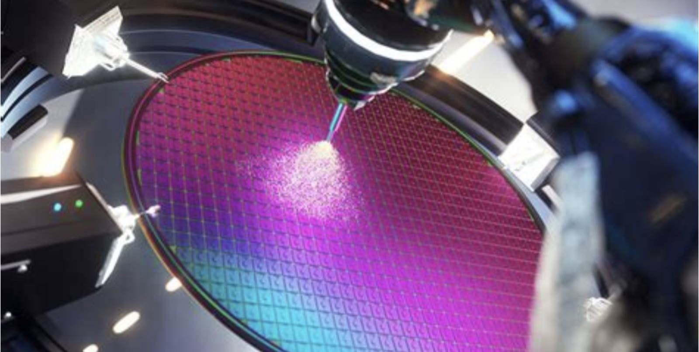
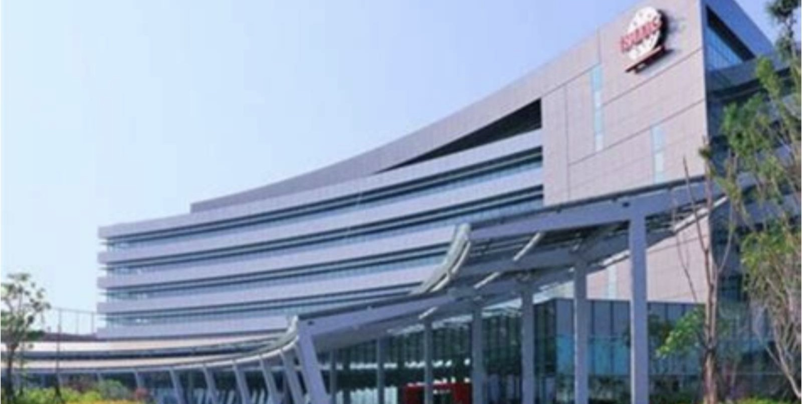
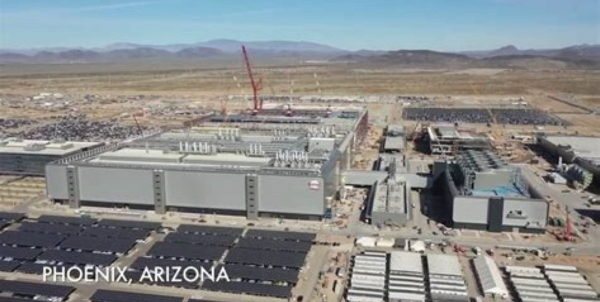
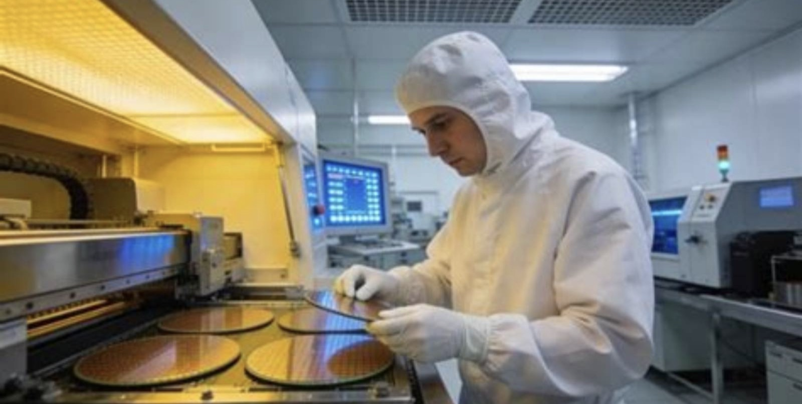
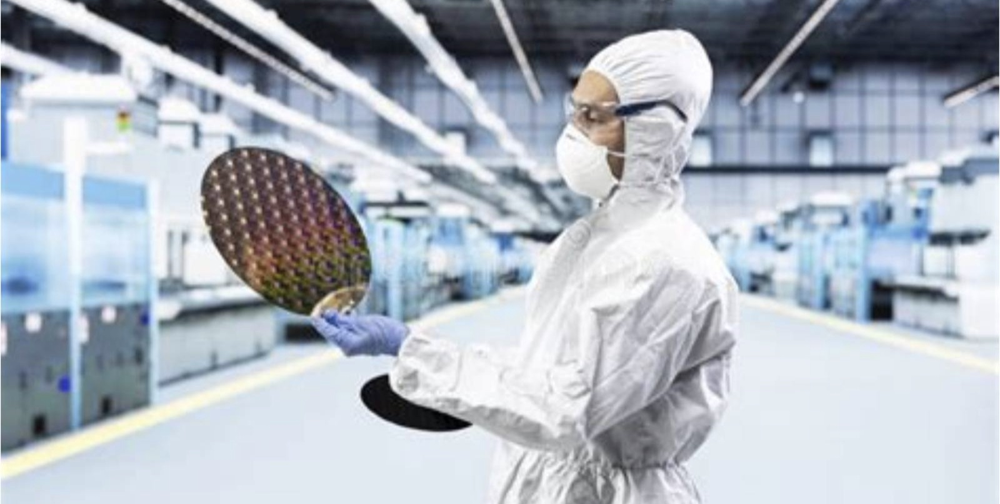
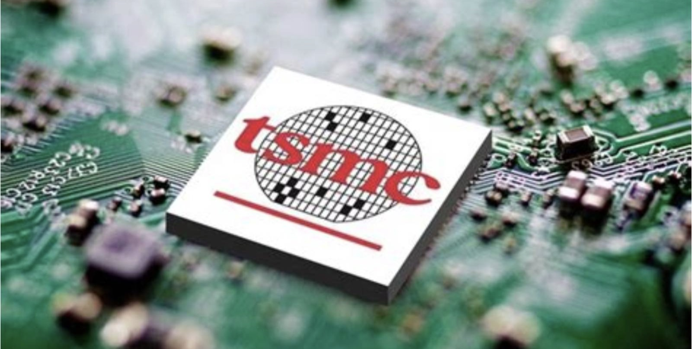
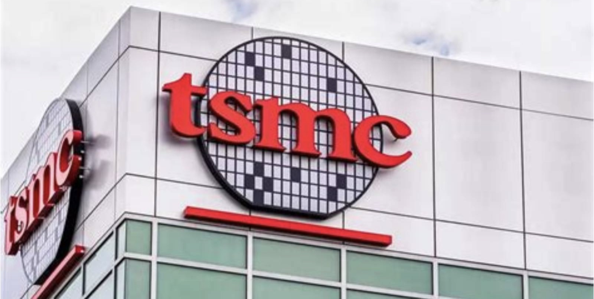

NYSE: TSM
台积电
六成六的毛利率，能撑多久
这份报告怎么读，以及它不做什么
写作原则
- 所有数据标注来源与日期。财务数据以 20-F/6-K 与季度营运报告为准，行业数据标注第三方机构与发布时间。
- 不假造调研。本报告未对台积电及其客户、供应商进行任何一手访谈。所有产业链信息均来自公开报道，逐条标注。
- 区分事实与判断。事实附来源；判断明确写「我们认为」，并给出证伪条件。
- 不用模糊词。「大幅」「显著」必须带数字。
一个必须说清的口径问题
台积电以新台币记账，以美元披露指引。新台币升值时，同样的美元营收会压低新台币毛利——2026 年这个影响约 0.6 个百分点。本报告除特别说明，一律用美元口径；涉及每股收益时用新台币，ADR 折算按 1 单位 = 5 股普通股。
时间节点
数据截止 2026 年 11 月 11 日收盘，股价 415.84 美元。最近一期财报为 2026Q3（10 月 15 日披露），Q4 指引已给出，全年指引为美元营收增长约 44%。
本报告没有做的事
① 未访谈台积电采购、生产与客户团队；② 未实地考察任何一座晶圆厂；③ 未拆解 CoWoS 载板做 BOM 测算；④ 未使用付费的晶圆产能与价格数据库，产能数字来自卖方研究与公开报道；⑤ 未获取客户侧的实际投片量。
怎么读
时间紧读第 5、6、10 页，再读第 2 章与第 5 章。要做决策读第 9、10 页与 8.3 节的卖出条件。
目录 八章
全文 8 章 · 47 节 · 157 个子目
图表 54 张，数据表 91 张。第 2、5、6 章为本文核心。
八章结构与页面分布
| 章 | 标题 | 该章要回答的问题 | 页数 | 页码 |
|---|---|---|---|---|
| 01 | 公司：三十年只做一件事，做成了定价权 | 它是怎么从「接单代工」变成「分配产能」的 | 20 | 011—030 |
| 02 | 行业：钱流向能造最先进制程的那一家 | 需求到底有多大，供给的真实瓶颈在哪一层 | 28 | 031—058 |
| 03 | 技术：领先不是一代节点，是良率的复利 | 技术领先能折算成几年超额利润 | 28 | 059—086 |
| 04 | 竞争：追赶者买到的是产能，不是位置 | 对手追上来要多久，追上后价格掉多少 | 22 | 087—108 |
| 05 | 财务：66% 的毛利率是怎么算出来的 | 这个毛利率是技术溢价还是短缺租金 | 31 | 109—139 |
| 06 | 估值：23 倍前瞻市盈率在为 44% 的增速定价 | 当前股价隐含什么假设，假设合理吗 | 24 | 140—163 |
| 07 | 风险：九个可能出错的地方 | 什么信号出现时该承认错了 | 14 | 164—177 |
| 08 | 结论：买不买，什么价，什么时候卖 | 评级、目标价、建仓与退出 | 14 | 178—191 |
| — | 附录与声明 | 来源、方法与免责声明 | 9 | 192—200 |
五条结论
01 它已经不是「代工厂」，是产能的分配者
2026 年三季度营收 467 亿美元，同比增长 41%，毛利率 66.4%。三年前同样的产能，毛利率是 58%。差别不在成本，在排队的人变多了：2 纳米产能已经订到 2028 年，公司对大客户明确「不折扣」。定价权的标志不是能涨价，是涨价之后没人走。
02 这轮毛利率的 8 个百分点，一半是结构，一半是短缺
我们拆了 2025 到 2026 年的毛利桥：价格与产品结构贡献 4.2 个点，产能利用率贡献 2.5 个点，成本改善 1.8 个点，2 纳米爬坡与海外厂各拖累 1 个点上下。结构性的部分能留住，短缺的部分会随产能释放回吐。
03 2027 年的关键不是需求，是价格能不能再涨一次
公司已在 9 月通知客户 2027 年先进制程涨价 3%—6%，卖方普遍预期 5%—10%。如果落地 7%，叠加 2 纳米产能翻倍，2027 年营收可到 2,430 亿美元（+38%）。这是我们基准假设的核心，也是最容易被证伪的一条。
一句话
它卖的是一张「未来三年先进制程的入场券」，价格由排队长度决定，不由成本决定。
04 23 倍前瞻市盈率不贵，但也没便宜到可以无视风险
按 2026E 每股收益 110 元新台币算，ADR 市盈率 23.8 倍；按 2027E 151 元算，17.1 倍。对应 2026—2028 年净利润复合增速 32%，PEG 0.53。估值不是问题，波动才是。
05 最大的风险不在这家公司，在它的客户
英伟达、博通、AMD 三家合计约四成营收，全部指向同一个变量：AI 数据中心的资本开支。11 月 5 日费城半导体指数单日跌 12.25%，台积电 ADR 跌 10.78%——市场已经演示过一次「这个变量出问题时它会怎么跌」。
评级、目标价与关键假设
目标价的三个组成部分
| 方法 | 关键假设 | 隐含价值 | 权重 |
|---|---|---|---|
| 2027E 市盈率 | EPS 151 元 × 19.5x ÷ 汇率 31.0 × 5 | 475 | 50% |
| 自由现金流折现 | WACC 8.5%，永续增长 2.5% | 452 | 30% |
| 情景加权 | 乐观 610 / 基准 478 / 悲观 272 | 460 | 20% |
| 加权目标价 | 取整，对应 2027E 19.3x | 470 | 100% |
什么情况下这个判断会错
- 2027 年先进制程涨价落空。若只涨 0—3%，2027 年 EPS 降至 128 元，目标价降至 385 美元，评级转为中性。
- AI 资本开支在 2027 年出现负增长。台积电产能利用率跌到 85% 以下，毛利率回到 58%，估值会同时杀业绩与杀倍数。
- 台海出现实质性军事或封锁事件。这不是估值问题，是资产归零的尾部风险，任何折现模型都不适用。
评级体系：买入（12 个月上行 >25%）／增持（10%—25%）／中性（−10%—10%）／减持（−10%—−25%）／卖出（<−25%）。定义见 8.2 节。
关键数据 一张表看完全部
| 指标 | 2026Q3 | QoQ | YoY |
|---|---|---|---|
| 营业收入（亿美元） | 467.2 | +16.2% | +41.2% |
| 毛利率 | 66.4% | −1.3pp | +8.0pp |
| 营业利益率 | 58.7% | −1.2pp | +8.1pp |
| 税后净利（亿美元） | 238.4 | +6.7% | +57.7% |
| 每股收益（新台币元） | 29.43 | +8.0% | +68.7% |
| 2 纳米占晶圆收入 | 8% | — | 首次贡献 |
| 高性能计算占比 | 68% | +2pp | +10pp |
| 资本开支（亿美元，单季） | 138 | +18% | +52% |
| Q4 营收指引（亿美元） | 523—543 | +14% | +58% |
| 2026 全年营收增速（美元） | 约 +44% | — | 上调 |
多空双方各自最硬的一条论据
多头最硬的一条
「全世界能稳定量产 2 纳米的地方只有一个，而需求方有十五家。」
2 纳米客户名单里 15 家，其中 10 家做高性能计算。三星的 2 纳米良率 60%，只能接台积电吃不下的外溢订单（特斯拉 AI6 就是典型）；英特尔 18A 至今没有外部大客户。这不是份额问题，是「没有第二个选项」的问题。只要这个结构不变，涨价就能落地。
可验证性：2027 年一季度先进制程是否如期涨价 5% 以上，是这条论据的直接检验。
空头最硬的一条
「它的客户把四分之一的收入押在一件还没证明能赚钱的事上。」
英伟达、博通、AMD 三家约四成营收，最终都指向 AI 数据中心的资本开支。而这些开支的回报，至今没有一家云厂商给出可验证的数字。11 月 5 日的中期选举只是一次预演：政策风向一变，费城半导体指数单日跌 12.25%，台积电 ADR 跌 10.78%。台积电是这条链上最优质的公司，也是弹性最大的一环。
可验证性：北美四大云厂 2027 年资本开支指引若低于 2026 年，这条论据即刻成立。
立场
两条都成立。多头的论据决定 2027 年的盈利，空头的论据决定 2027 年的估值倍数。我们的判断是：盈利这一端确定性更高（涨价 + 2 纳米放量），倍数这一端已经反映了一部分恐慌（从 28 倍回到 24 倍）。这个组合支持「增持」，不支持「买入」。
三种 2028 年的可能，与对应的股价
| 情景 | 概率 | 核心假设 | 2027E EPS | PE 倍数 | 隐含股价 | 较现价 |
|---|---|---|---|---|---|---|
| 乐观 涨价 10% + 2 纳米超预期 | 25% | AI 资本开支 2027 年再增 40%，先进制程涨价 10% 全额落地，2 纳米产能利用率 95% | 168 元 | 23x | 610 | +46.7% |
| 基准 涨价 7% + 产能翻倍 | 50% | 涨价 7% 落地，2027 年营收 2,430 亿美元，毛利率 67.5%，海外厂稀释 1.5 个点 | 151 元 | 19.5x | 478 | +15.0% |
| 悲观 AI 开支失速 + 涨价落空 | 25% | 2027 年营收仅增 16%，产能利用率降至 85%，毛利率退回 63% | 118 元 | 14x | 272 | −34.6% |
概率分配依据：涨价 5%—10% 已被公司 9 月的通知函部分锁定（3%—6%），因此基准情景概率最高；悲观情景需要「AI 资本开支失速」与「涨价落空」同时发生，概率不低但非主情景。
股价换算：2027E EPS（新台币）× PE ÷ 31.0 × 5。PE 倍数按情景调整——乐观给 23 倍（增长确定性高、周期高位），悲观给 14 倍（周期下行 + 估值下修）。
加权期望值 = 610×25% + 478×50% + 272×25% = 459.5 美元。
七个可被证伪的判断
| # | 判断 | 验证指标 | 时间点 | 证伪条件 |
|---|---|---|---|---|
| 1 | 2027 年先进制程涨价幅度在 5%—10% 之间 | 客户公告、供应链报价 | 2027Q1 | 实际涨幅低于 3% 或高于 12% |
| 2 | 2027 年美元营收增速 33%—42% | 季度财报 | 2027Q4 | 高于 45% 或低于 25% |
| 3 | 2027 年毛利率不低于 66% | 季度财报 | 2027Q4 | 任一季度低于 64% |
| 4 | 海外厂对毛利率的稀释不超过 2 个百分点／年 | 法说会口径、公司披露 | 持续 | 单年稀释超过 3 个点 |
| 5 | 三星在 2027 年拿不到任何一家美国超大规模客户的 2 纳米主单 | 客户公告、供应链 | 2027 年内 | 英伟达或 AMD 在三星投 2 纳米主单 |
| 6 | 2027 年资本开支 750—850 亿美元 | 公司指引 | 2027Q1 | 低于 700 亿或高于 900 亿 |
| 7 | ADR 相对台股的溢价维持在 5%—15% | 两地价差 | 持续 | 溢价收敛至 3% 以下 |
方法
每季度末对照一次。当 3 条以上被证伪时，无论盈亏都应重新审视持仓。第 1、2 条是核心，其余是辅助。

公司
三十年只做一件事
1987：政府出钱，一个 56 岁的人出手
1985 年，张忠谋离开德州仪器，出任台湾工业技术研究院院长。两年后，工研院把旗下的 6 英寸晶圆试验厂剥离，成立台积电，注册资本 13.8 亿新台币。
股权结构是三方妥协的结果：台湾政府（行政院开发基金）48.8%，飞利浦 27.5%，其余由民间与台塑等企业认购。飞利浦带来制程授权与首批订单，政府带来资本与土地，张忠谋带来一件事——一个当时没人相信的商业模式。
他的判断是：芯片公司会越来越多，但建一座晶圆厂的成本会涨到大多数公司付不起。如果有一家公司只做制造、不碰设计，它就永远不会和客户竞争。
1988 年，台积电拿到第一笔像样的代工单——英特尔的一批逻辑芯片，条件是必须通过英特尔的制程审核。这次审核让台积电学会了「按国际标准做品控」，也让它拿到了进入美国市场的信用。
关键年份
| 1987.02 | 公司成立，政府 48.8% |
| 1988 | 通过英特尔制程审核 |
| 1994.09 | 台湾证交所上市 |
| 1997.10 | 纽交所 ADR 上市 |
| 2009 | 张忠谋回任 CEO |
| 2018.06 | 张忠谋退休，魏哲家接 CEO |
| 2020 | 5 纳米量产，宣布赴美建厂 |
| 2022.12 | 3 纳米量产 |
| 2024 | 魏哲家接任董事长 |
| 2025.12 | 2 纳米量产 |
三次下注，每次都在行业最不景气的时候
第一次（2010—2014）：金融危机后行业资本开支普遍收缩，台积电把开支从 27 亿美元拉到 97 亿，全押 28 纳米。结果是在 40/28 纳米节点拿下接近全部的手机基带与 AP 订单，毛利率从 45% 升到 50%。
第二次（2016—2020）：不做最先进封装，就接不到手机 AP 的单。台积电用 InFO 与 CoWoS 把封装拉进自己的产线，从「卖晶圆」变成「卖可以装进整机的裸片」。
第三次（2022—2026）：3 纳米良率还在爬坡时，就把资本开支推到 363 亿美元，同时启动海外建厂。这次下注的对手不是同行，是地理——它赌的是「客户愿意为供应链安全多付钱」。
不做设计的代价：放弃了 40% 的毛利率，换来了 70% 的份额
纯代工模式的代价是明确的：不能卖自有品牌芯片，不能从设计端收溢价，不能在客户的产品成功时分成。台积电的毛利率长期低于英特尔 15—25 个百分点（英特尔 2010 年代毛利率稳定在 60% 以上，台积电同期 45%—50%）。
回报也是明确的：客户不必担心技术被抄。苹果把 A 系列全部交给台积电，英伟达把最先进的 GPU 交给台积电，原因是同一个——台积电不设计芯片，所以不会有「教会徒弟饿死师傅」的问题。
这个逻辑的反面是三星。三星同时做存储、做代工、做手机，它的代工客户必须接受「我的设计可能出现在竞争对手的产品里」这个风险。这是三星代工份额长期停留在 6%—8% 的结构性原因，而不是良率。
两种模式的结构差异
| 维度 | 纯代工（台积电） | IDM（三星/英特尔） |
|---|---|---|
| 客户信任 | 高 | 结构性折扣 |
| 资本效率 | 高（产能共享） | 低（自用为主） |
| 技术选择 | 服务多数客户 | 服务自家产品 |
| 周期弹性 | 受全行业影响 | 受自家终端影响 |
| 2026 份额 | 72.5% | 三星 5.9% / 英特尔约 2% |
没有控股股东，也没有控制权之争
台积电的股权分散程度在全球大型半导体公司里罕见：最大单一股东是台湾国家发展基金（约 6.4%），飞利浦在 2005 年完成退出，外资持股长期在 25%—35%。没有实际控制人，也就没有「大股东为了自己的另一个生意牺牲公司利益」的问题。
代价是决策更慢。重大投资要经过董事会与股东会，海外建厂这类议题还要面对政策压力。但三十九年的记录显示，这套机制没有导致过重大的资本配置错误——它错过的是速度，不是方向。
一个常被忽略的细节：台积电的董事会里有相当比例的外部董事，且历届董事长都从内部技术或营运体系产生（张忠谋、刘德音、魏哲家）。这保证了「技术路线判断」不会被财务目标绑架。
交接班只有两次，每次都在技术换代的当口
2018 年张忠谋退休，把公司拆成「董事长 + 总裁」双首长制：刘德音管战略与外部关系，魏哲家管营运与技术。2024 年刘德音退休，魏哲家兼任董事长与总裁，双首长制结束。
这个安排的背景是 2 纳米与海外扩产同时启动——组织需要一个人对「技术节奏」和「资本节奏」同时负责。从 2024 到 2026 的执行看，这个判断成立：2 纳米按期量产，亚利桑那 P2 按计划装机。
治理上真正的风险不是接班，是「技术决策被政治决策覆盖」。亚利桑那的追加投资、对美技术转移的加速，都有明显的非商业因素。这类决策不会立刻体现在报表上，但会体现在毛利率的长期中枢上。
| 时期 | 治理结构 | 对应节点 |
|---|---|---|
| 1987—2005 | 张忠谋任董事长兼 CEO | 0.8μm—90nm |
| 2005—2009 | 蔡力行任 CEO | 65nm—40nm |
| 2009—2018 | 张忠谋回任 | 28nm—10nm |
| 2018—2024 | 刘德音 + 魏哲家双首长 | 7nm—3nm |
| 2024— | 魏哲家兼任董事长 | 2nm—A16 |
三十年只做一件事：把赚到的钱再投进晶圆厂
台积电的分红政策是「稳定但不激进」：现金股利支付率长期在 25%—30%，没有大规模回购。2026 年第三季宣告每股现金股利 9 元新台币，年化约 36 元，对应当年每股收益 110 元，支付率 33%，股息率约 1.5%。
这个政策背后的判断是：把钱留在公司里的回报率，高于股东自己拿去做配置。过去十年的数据支持这个判断——ROE 从 25% 升到 42%，而同期把利润分掉的同业（如联电）ROE 维持在 12%—15%。
真正的变化在 2026 年：资本开支升到 620 亿美元，自由现金流仍然有 400 亿美元以上。这意味着它第一次可以「既大额投资，又提高分红」——这是很多重资产公司做不到的。
高性能计算已经占到 68%，手机退到 21%
这个结构变化发生在三年内：2023 年高性能计算占 44%，手机 38%；2026Q3 变成 68% 与 21%。台积电的命脉已经从消费电子绑到了数据中心。
结构变化带来两个后果。第一，季节性变弱——手机的旺季节奏被数据中心的「按项目交付」替代，季度波动变小。第二，客户集中度上升——数据中心客户的数量比手机客户少一个量级。
值得注意的一条：汽车电子占比只有 4%，但环比增长 23%，是各平台里增速最快的。它不是这一轮的驱动，但它是 2028 年之后最可能接棒的那一块。
2 纳米量产两个季度，已经占到晶圆收入的 8%
2 纳米在 2025 年第四季量产，2026Q3 占晶圆收入 8%。作为对照，3 纳米量产后的第四个季度占比是 4%。爬坡更快的原因不是技术，是客户结构——2 纳米首批 15 家客户里 10 家做高性能计算，它们对价格的敏感度低于手机客户。
先进制程（7 纳米及以下）合计 79%，比 2025 年的 77% 又高 2 个点。成熟制程（16 纳米及以上）的占比降到 21%，但绝对金额没有下降——它被挤到边缘的只是占比，不是收入。
这个结构对毛利率的作用是单向的：制程越先进，单片价格越高，折旧摊得越薄。见 5.2 节的毛利桥。
七成收入来自北美，但产能在台湾
| 地区 | 收入占比 | 主要客户 |
|---|---|---|
| 北美 | 70% | 苹果、英伟达、AMD、博通、高通 |
| 亚太 | 17% | 联发科、索尼、瑞萨 |
| 中国 | 8% | 华为以外的设计公司、比特大陆类 |
| 欧洲、中东、非洲 | 5% | 英飞凌、恩智浦、意法 |
| 产能所在地 | 台湾约 92%，亚利桑那约 3%—4%，日本熊本、德国德累斯顿在建 | |
「收入在美国、产能在台湾」这个错配，是这家公司所有地缘风险的源头，也是它过去五年估值折价的来源。
2026 年亚利桑那贡献集团营收约 4%，先进制程产能占比 3%—4%。规划中的 10 座晶圆厂全部完工后，美国将承载其 2 纳米及更先进产能的约 30%——注意这是 2029 年之后的数字，不是现在。
日本熊本一厂已于 2024 年底量产（22/28 纳米为主），二厂在建；德国德累斯顿聚焦 28/22 纳米车用。这两处不解决先进制程的集中度问题，解决的是「成熟制程就近供应」的问题。
未来三年，台湾要新建 13 座厂
| 基地 | 定位 | 状态（2026-11） |
|---|---|---|
| 新竹 Fab 20 | 2 纳米主力 | 量产中，2027 年产能翻倍 |
| 高雄 Fab 22 | 2 纳米 / A16 | P1 量产，P2—P5 建设中 |
| 台中 Fab 25 | A14（1.4 纳米） | 2027 年进设备，2028 年量产 |
| 台南 Fab 18 | 3 纳米 / 5 纳米 | 满产，扩产 5.5—6 万片/月 |
| 嘉义 AP7 | CoWoS / SoIC | 2026 年起分批投产 |
| 苗栗 AP6 | 先进封装 | 量产中 |
| 亚利桑那 | 4/3/2 纳米 + 封装 | P1 量产，P2 装机，P3 土建 |
| 熊本 / 德累斯顿 | 成熟制程 | 熊本一厂量产，二厂在建 |
资本的分配是清楚的：70%—80% 投向先进制程，10%—20% 投向先进封装与测试，10% 投向特殊制程。
先进封装第一次拿到两位数的资本份额，这个变化比制程扩产更能说明需求结构的变化——见 3.3 节。
美国的厂，成本是台湾的四倍
| 成本项 | 台湾 | 亚利桑那 | 倍数 |
|---|---|---|---|
| 直接人力 | 1.0 | 2.2—2.5 | 2.3x |
| 晶圆折旧 | 1.0 | 4.0 | 4.0x |
| 建厂资本 | 1.0 | 4.0—5.0 | 4.5x |
| 水电与配套 | 1.0 | 1.6 | 1.6x |
| 单厂毛利率（估） | 约 66% | 不足 10% | — |
2025 年第三季，台积电美国子公司税后净利只剩 0.41 亿新台币，比上季的 42.23 亿暴跌 99%——原因不是需求，是 P2 建厂的费用化与爬坡成本。
这就是「把最先进制程留在台湾」这句话的经济含义。不是不想转移，是转移之后毛利率会掉到无法支撑 620 亿美元资本开支的水平。
公司的对冲办法只有两个：一是向客户收「海外溢价」，二是靠规模摊薄。第一个已经在做（2027 年涨价），第二个要等到 2029 年 10 座厂全部投产。
产能利用率连续六个季度在 95% 以上
利用率 98% 意味着两件事：一是没有闲置产能可以接急单，二是有理由涨价。历史上台积电的涨价都发生在利用率连续四个季度高于 95% 之后——2010 年、2014 年、2021 年都是这个节奏。
成熟制程的利用率也在上升（90%），但驱动力不同：不是需求爆发，是台积电主动关停 6 英寸与部分 8 英寸产线，把资源集中到 12 英寸。
需要提醒的是，这些数字来自供应链调研而非公司披露（台积电不公布利用率）。误差可能在 ±3 个百分点，结论「接近满产」不受影响，但精确值不可依赖。

亚利桑那：一座厂的代价
同样的 4 纳米产线，在亚利桑那的人力成本是台湾的两倍以上，折旧是四倍。公司自己给出的数字是：海外厂长期稀释毛利率 3—4 个百分点。这不是一次性的建厂成本，是永久性的成本结构上移。
图为台积电亚利桑那厂区（公开图片）
客户名单换了一轮：从手机厂到数据中心
| 客户 | 估算占比 | 主要产品 | 节点 |
|---|---|---|---|
| 苹果 | 19% | A/M 系列、基带 | N3 / N2 |
| 英伟达 | 13% | GPU、NVLink 交换 | N4 / N3 |
| 博通 | 10% | 定制 ASIC、交换 | N3 / N2 |
| AMD | 8% | CPU、GPU | N3 / N2 |
| 联发科 | 6% | 手机 SoC | N3 / N2 |
| 高通 | 5% | 骁龙、基带 | N3 / N2 |
| 英特尔 | 4% | Lunar Lake 计算模块 | N3 |
| 前七合计 | 65% | — | — |
三个数据点值得记住：一是英伟达、博通、AMD 三家合计约 31%，加上苹果的 19%，四家就占了一半营收；二是英特尔的 4%——它既是台积电的竞争对手，也是它的客户，因为 18A 的水平大致相当于台积电 3 纳米，做不出更先进的产品；三是 2 纳米的 15 家客户里，10 家做高性能计算，手机只剩苹果、联发科、高通三家。
这个结构说明一件事：台积电的定价能力来自「客户的下一代产品没有替代方案」，而不是来自客户数量多。客户越集中，单一大客户的议价能力理论上越强——但前提是他有第二个选择。
涨价 5% 到 10%，没有一个大客户走掉
判断一家公司有没有定价权，不看它敢不敢涨价，看涨价之后客户的行为。台积电这一轮的三个事实：
- 2 纳米报价 3 万美元/片，比 3 纳米高 50%，大客户也不打折。三星同节点的报价约 2 万美元，便宜三分之一，但没有拿到任何一家美国大厂的旗舰主单。
- 高通 2026 年 9 月的旗舰芯片，标准版与 Extreme 版全部由台积电 2 纳米代工，三星一颗没拿到。
- 特斯拉 AI6（165 亿美元）交给三星，原因不是价格，是台积电 2 纳米排不进去——这是「产能外溢」，不是「份额流失」。
三条合起来说明：客户不是不想换，是换不到同样良率的产能。这就是定价权的定义。
单片价格（美元，估算）
| N5 / N4 | 约 16,000 |
| N3 / N3E | 约 20,000 |
| N2 | 约 30,000 |
| 三星 SF2 | 约 20,000 |
| A16（2027） | 预计 35,000+ |
四成营收押在三家身上，这是最脆弱的一环
英伟达、博通、AMD 三家的共同点是：它们的订单最终取决于同一批买家的资本开支——微软、亚马逊、谷歌、Meta，加上 Oracle 与 CoreWeave 这类新买家。
这个集中度在景气向上时是杠杆，向下时是放大器。2026 年 11 月 5 日，费城半导体指数单日跌 12.25%，台积电 ADR 跌 10.78%，就是在给这个结构定价。
对冲这个风险的不是「客户多元化」——短期内做不到，而是「技术代差」。只要下一代产品只能在台积电做，客户即使削减资本开支，也会优先保住给台积电的订单。这是 2023 年下行周期验证过的：当年营收下滑 8.7%，份额反而上升。
它把「只做制造」做成了「分配产能」
三十九年前那个「只做代工、不设计」的决定，在当时是接不到好单的无奈选择。今天它变成了三件事：客户不必担心技术被抄、产能可以按战略优先级分配、价格可以按排队长度定。
财务上的证据是：毛利率从 2023 年的 54% 升到 2026Q3 的 66.4%，同期营收增长 78%。涨价与结构升级同时发生，这在制造业里很少见。
但这一章也留下两个问题，后文要回答：第一，66% 的毛利率里，有多少是「没有第二个选项」带来的，当第二个选项出现时会掉多少；第二，客户集中度升到 31%，当 AI 资本开支转向时，这个结构会放大多少波动。
三句话
① 纯代工模式在 2026 年第一次显示出完整的定价权，不是靠份额，是靠「没有替代」。
② 定价权的物理载体是产能，产能的地理位置在台湾，这是所有风险的交汇点。
③ 客户结构已经从消费电子换成数据中心，波动性因此上升，季节性因此下降。
三个这一章回答不了的问题
01 产能到底有多紧
公司说 2 纳米订到 2028 年，但「预订」通常只是框架协议，可以取消或推迟。真实锁定量没有披露。这个问题的答案，决定 2027 年涨价能不能全额落地。
02 海外厂的成本能不能转嫁
公司说可以靠涨价转嫁，但客户已经知道「你必须在亚利桑那建厂」——这是政策要求，不是商业选择。这种情况下议价能力会减弱。观察点在 2027 年的价格谈判。
03 A16 之后还有没有牌
A16（1.6 纳米，2027 下半年）之后是 A14（2028），再往后是 1 纳米级。每一代的研发成本都在翻倍。什么时候「继续缩小」不再划算，是全行业的问题。
这三个问题分别在 2.3、5.4、3.5 节展开。如果一个都回答不了，那么「增持」的评级就只能建立在估值上，而不是基本面上。
争议：台湾溢价还在不在
说「溢价消失」的一方认为：客户已经在做分散，苹果在评估英特尔 18A，高通在和三星谈 2 纳米，特斯拉把 AI6 给了三星。这些动作现在只是备选方案，但备选方案一旦成熟，台积电的定价权就会打折。
说「溢价扩大」的一方认为：分散的前提是「第二个供应源的良率能追到 90%」，而三星 2 纳米良率现在 60%，英特尔 18A 没有外部客户。追上来需要三到五年，这期间台积电每代都在往前跑。
我们的判断偏后者，但保留一个条件：如果 2027 年出现「大客户在三星投 2 纳米主单」的公告，这条判断即刻失效。这不是概率问题，是二元事件。
溢价扩大
客户无替代，涨价可落地，毛利率维持 66% 以上
溢价收窄
三星良率追到 80%，客户分流 10%—15% 订单
溢价被政策征税
海外厂强制扩产，成本转嫁不完全，毛利率下移
溢价消失
两家以上供应商可做 2 纳米，价格战重启（概率低）

行业
钱流向能造最先进制程的那一家
训练、推理、代理：三层需求，三种经济学
把 AI 算力需求当成一个整体来看，会得出「要么爆炸要么崩塌」的结论。分层看，结论不一样。
训练层的需求由少数几家前沿实验室决定，单次投入大、可中断、对价格不敏感，但对「能不能买到」极度敏感。这一层贡献了 2024—2025 年大部分增量。
推理层的需求由使用量决定，单价敏感、需要就近部署、增长平滑。这一层是 2026 年之后的主战场，也是台积电订单能见度变长的原因。
代理层（Agentic AI）是 2026 年新出现的一层：模型自己调用工具、执行多步任务，对 CPU 与网络芯片的需求拉动比对 GPU 更明显。公司在 2026Q3 法说会明确提到这一点。
三层的共同点只有一个：都要用最先进的制程，因为能效比是唯一能同时降低成本与功耗的变量。
三层需求的差异
| 维度 | 训练 | 推理 | 代理 |
|---|---|---|---|
| 决策者 | 少数实验室 | 云厂 + 企业 | 应用厂商 |
| 价格敏感 | 低 | 高 | 中 |
| 可中断性 | 高 | 低 | 低 |
| 对应芯片 | GPU/TPU | 推理 ASIC | CPU + 网络 |
| 2026 占比（估） | 45% | 45% | 10% |
AI 相关收入今年过三成，公司自己的目标是 2029 年六成
「AI 相关」是公司自己的口径，包含 GPU、AI 加速器、AI 服务器 CPU 与相关网络芯片，不含手机里的 NPU。按这个口径，2026 年占比约 32%，2029 年目标 60%。
公司同时给了一个更激进的数字：2024—2029 年 AI 加速器收入的年复合增速「中高 50%」。魏哲家在 2026Q3 法说会上说，实际增速「大概率更高」。
我们对 2029 年 60% 这个目标的态度是：方向可信，斜率存疑。因为它要求 AI 收入五年增长 8 倍，而同期总营收只增长 2.5 倍——意味着非 AI 业务基本零增长。这在手机与 PC 出货量见顶的背景下是可能的，但需要汽车与工业填补缺口。
手机与 PC 不再是增量，但它们是分母
2026 年全球智能手机出货量预计 12.4 亿部，同比 +1.5%；PC 出货 2.7 亿台，同比 +3%。这两个数字都不足以拉动台积电的增长，但它们决定了另外一件事：成熟制程的产能利用率下限。
手机对台积电的价值不在数量，在单价。一颗 3 纳米手机 SoC 的晶圆面积约 100 平方毫米，单片 2 万美元的 3 纳米晶圆能切出约 500 颗，折算单颗代工成本约 40 美元——这是手机 BOM 里除存储外最大的单项。
2026 年的一件小事值得注意：存储涨价压缩了手机厂的 BOM 空间，部分中低端机型下调了出货计划。台积电的应对是把产能转给高性能计算——这正是它能在手机疲软时保持增长的原因。
| 终端市场 | 2026 出货 | 同比 | 对台积电影响 |
|---|---|---|---|
| 智能手机 | 12.4 亿部 | +1.5% | 占比 21%，稳定 |
| PC | 2.7 亿台 | +3.0% | 占比不足 5% |
| 服务器 | 1,450 万台 | +18% | 核心增量 |
| 汽车 | 9,200 万辆 | +2.5% | 占比 4%，单价高 |
| IoT | — | +5% | 占比 4% |
2027 年需要多少晶圆：一次自下而上的测算
| 品类 | 2027 出货（万颗） | 单片可切 | 需要晶圆（万片/年） |
|---|---|---|---|
| AI GPU（英伟达） | 820 | 65 | 12.6 |
| 定制 ASIC（博通/谷歌/亚马逊） | 640 | 90 | 7.1 |
| AI CPU 与网络芯片 | 1,900 | 220 | 8.6 |
| 手机 SoC（3nm/2nm） | 52,000 | 500 | 104.0 |
| PC 与服务器 CPU | 28,000 | 380 | 73.7 |
| 合计（先进制程） | — | — | 206.0 |
206 万片/年，折合每月 17.2 万片。台积电 2027 年先进制程（7 纳米及以下）月产能约 22—24 万片，也就是说利用率要维持在 75% 以上才能吃下这个需求。
这个测算的意义不在精确值，在结构：AI 芯片只占晶圆数量的 14%，但占先进制程收入的 45% 以上，因为单价是手机的 3 倍、面积是 8 倍。
误差主要来自两处：单片可切数（±20%）与 AI 芯片出货（±25%）。如果把 AI 出货下调 30%，晶圆需求降到 190 万片，缺口消失——这是悲观情景的算法基础。
需求这一端，看三个指标就够了
一、云厂资本开支
北美四家（微软、亚马逊、谷歌、Meta）2027 年资本开支指引，是否高于 2026 年的 4,300 亿美元。这是最直接的先行指标，通常在每年 1—2 月的财报季给出。
阈值：合计低于 4,000 亿，视为需求失速。
二、Token 单价
主流模型的推理单价（每百万 token）在下行，说明单位算力的产出在提升。单价降得太快，会压缩云厂的算力租赁毛利，进而压缩资本开支。
阈值：年降幅超过 70%，视为需求质量恶化。
三、电力装机
美国数据中心新增电力装机（GW）。芯片可以提前半年下单，电力不行。公司自己说，他们在实地核查美国数据中心的建设与供电情况。
阈值：2027 年新增装机低于 8GW，视为供给端硬约束。
是这三个
因为它们都不由台积电自己控制，也不由它的客户控制。台积电的订单能见度再长，最终也要落在电力和终端使用量上。这三个指标转向时，台积电的订单会在两个季度内跟着转向。

一片晶圆，四百颗芯片，三个月
从投片到出货，先进制程的周期约 10—12 周；加上先进封装与测试，交付客户要 16—20 周。这个周期长度决定了：需求转向时，供给端的调整永远慢两个季度——涨的时候是利润，跌的时候是库存。
图为洁净室内的 300 毫米晶圆（公开图片）
「代工 2.0」把市场规模从 1,200 亿改成 2,500 亿
2023 年台积电提出「代工 2.0」口径，把封装、测试、光罩都算进来。按这个口径，2026 年市场规模约 2,210 亿美元，同比增长 28%；公司预计 2026 年代工 2.0 行业增长 14%，自身增速 44%——也就是说它在抢份额。
口径变化不是会计游戏。它反映的是商业模式的变化：客户买的不再是「一片晶圆」，是「一颗可以装进整机的裸片」。后段工序被拉进代工厂，价值量也就跟着进来了。
2025 年先进封装占台积电营收 8%，2026 年预计略超 10%，公司说「未来五年会越来越快」。见 3.3 节。
72.5% 的份额，是「先进制程独家」的另一种说法
| 厂商 | 2026Q2 份额 | 2025Q2 份额 | 变化 | 主要客户 |
|---|---|---|---|---|
| 台积电 | 72.5% | 67.6% | +4.9pp | 苹果、英伟达、AMD |
| 三星 | 5.9% | 7.4% | −1.5pp | 三星自用、特斯拉 |
| 中芯国际 | 5.4% | 5.1% | +0.3pp | 中国本地设计公司 |
| 联电 | 4.1% | 4.4% | −0.3pp | 驱动 IC、MCU |
| 格芯 | 3.8% | 4.2% | −0.4pp | 车用、工业 |
| 英特尔 | 约 2.0% | 约 1.8% | +0.2pp | 基本为内部 |
| 其他 | 6.3% | 9.5% | −3.2pp | — |
份额上升 4.9 个点，靠的不是成熟制程，是 3 纳米与 2 纳米的独家。把台积电的份额按节点拆开：7 纳米及以下接近 90%，28 纳米及以上约 45%。
另一个容易被忽略的数字：中芯国际的份额已经追到 5.4%，与三星只差 0.5 个百分点。成熟制程的竞争格局，和先进制程完全是两个世界。
为什么份额到不了 90%：客户需要第二个供应商
即使台积电的技术与良率都领先，份额也很难超过 80%。原因不是竞争，是客户的采购政策：任何一家理性的芯片公司，都不会让单一供应商占自己采购额的 100%。
这条规则的代价是高昂的——苹果为评估英特尔 18A 投入的工程资源，据公开报道超过数百人年。但它必须做，因为「断供」的风险无法用价格衡量。
所以份额的上限由两件事决定：一是客户愿意为「第二供应源」支付多少溢价（目前 20%—30%），二是第二供应源的良率能追到多少（三星 60%，英特尔未验证）。这两个数字不动，份额就会停在 72%—78% 这个区间。
先进制程的集中度，比整体份额更极端
| 节点 | 台积电 | 三星 | 英特尔 | 其他 |
|---|---|---|---|---|
| 2 纳米 / 18A | 约 90% | 约 8% | 约 2% | <1% |
| 3 纳米 / 3nm 级 | 约 85% | 约 10% | 约 5% | — |
| 5 / 4 纳米 | 约 78% | 约 12% | 约 5% | 5% |
| 7 纳米 | 约 70% | 约 15% | 约 5% | 10% |
| 28 纳米及以上 | 约 45% | 约 12% | 约 3% | 40% |
这张表解释了为什么「份额 72.5%」这个数字低估了它的地位。在贡献 79% 营收的先进制程上，它的份额是 85%—90%。
也解释了为什么成熟制程的价格战伤不到它：28 纳米及以上只占营收 21%，且这部分产能正在被主动压缩（关停 6 英寸厂）。
风险在于：越集中的地方，越容易成为政策目标。反垄断、出口管制、产能本地化要求，都会优先落在份额 90% 的那一层。见 7.3 节。
第一道墙：设备交期 18 个月，钱解决不了
先进制程的扩产瓶颈首先是 EUV 光刻机。ASML 的年产能约 60—70 台（2026 年），每台 2 亿—3.5 亿欧元。一台 EUV 对应约 10 万片/年的产能，也就是说全球每年新增的 EUV 只能支撑 60—70 万片/年的 2 纳米产能。
更麻烦的是交付周期：从下单到装机 18—24 个月，High-NA EUV 更长。这意味着2027 年的产能，在 2025 年就已经决定了。
台积电的应对是「用旧设备做新工艺」——通过多重曝光把 DUV 用到 7 纳米，把 EUV 留给 5 纳米以下。这是它在 2019—2020 年抢跑的原因，也是它设备利用效率高于同业的原因。
2027 年起，设备商计划对前端设备提价 10%—15%，后端封装设备提价 5%—10%。见 3.4 节。
第二道墙：电力和土地，比光刻机更难拿
一座 2 纳米晶圆厂的电耗约 100—150 兆瓦，相当于 10 万户家庭的用电。台积电 2025 年总用电量约占台湾全岛 8%，到 2028 年新厂全部投产后可能接近 12%。
台湾的电力结构是这件事的约束：核电占比下降、绿电建设滞后、燃煤电厂面临地方阻力。公司自己的说法是「电力供应是扩产的必要条件，不是充分条件」。
亚利桑那的约束是水。半导体制造需要超纯水，而亚利桑那是沙漠气候。台积电在当地建了水回收厂，目标回收率 85% 以上，但这是成本，不是收入。
结论：电力与土地不会阻止扩产，但会推迟扩产，并把成本推高。这两件事都会体现在毛利率上。
| 基地 | 主要约束 | 缓解方式 |
|---|---|---|
| 新竹 / 高雄 | 土地与环评 | 政府协调、园区扩建 |
| 台中 | 电力与水资源 | 再生水厂、长期购电协议 |
| 亚利桑那 | 水、人力、审批 | 水回收 85%、台湾工程师派驻 |
| 熊本 | 人力 | 索尼与丰田合资分担 |
| 德累斯顿 | 补贴审批 | 欧盟芯片法案资金 |
第三道墙：先进封装的产能，比晶圆更紧
一颗高端 AI GPU 需要一片 CoWoS 载板，而 CoWoS 的产能扩张速度慢于晶圆。原因有三个：载板供应（Ibiden、欣兴）、中介层产能、以及最关键的——台积电自己把 CoWoS 的扩产优先级排在晶圆之后。
2026 年 CoWoS 月产能约 13 万片，2027 年 20 万片，2028 年 26 万片（摩根士丹利预测）。同期 AI GPU 出货量增速是 45%—50%。缺口不会消失，只会缩小。
这就是为什么台积电开始把 CoWoS-S 与 CoWoS-R 外包给矽品、日月光——把低难度的部分让出去，自己只做 CoWoS-L。
第四道墙：良率不会因为投钱就上来
一座新厂从装机到良率 90%，需要 12—18 个月。这段时间的产出是「有收入但没利润」——折旧已经计提，良率还没上来，单位成本高企。
这就是 2 纳米爬坡对 2026 年毛利率的拖累约 1.2 个百分点的原因。不是坏事，是会计的必然。
良率的组织能力比设备更难复制。台积电的「试产—反馈—调整」循环，靠的是台湾本地的工程师密度与供应链响应速度。把同样的设备搬到亚利桑那，良率追平用了两年以上。
三星在 2 纳米的良率从 30%（2025 年中）爬到 60%（2026 年 9 月），用了一年多；台积电从试产到 90% 用了不到一年。这个时间差，就是护城河。
2027 年的缺口：约 8%，不会消失也不会扩大
| 项目 | 2026E | 2027E | 2028E |
|---|---|---|---|
| 先进制程需求（万片/月） | 15.8 | 21.6 | 26.4 |
| 先进制程产能（万片/月） | 13.8 | 19.8 | 25.0 |
| 缺口 | −12.7% | −8.3% | −5.3% |
| CoWoS 需求（万片/月） | 13.5 | 19.5 | 24.0 |
| CoWoS 产能（万片/月） | 13.0 | 20.0 | 26.0 |
| 封包装缺口 | −3.7% | +2.6% | +8.3% |
这张表的结论有两个：晶圆端的缺口从 12.7% 收窄到 5.3%，但不会消失——因为需求增速与产能增速在同一个量级（26% vs 30%）；封装端的缺口在 2027 年就会转正。
缺口 8% 意味着什么？意味着价格可以涨，但涨不到「短缺定价」的程度。这是我们给 2027 年涨价 7%、而不是 15% 的原因。
真正的风险在反方向：如果 2028 年 AI 资本开支增速掉到 10% 以下，产能会在半年内从「缺口 5%」变成「过剩 10%」——这时的价格弹性是向下的，而且很快。
定价方式变了：从「成本加成」到「按价值收费」
代工业的传统定价是成本加成：算出晶圆成本，加 30%—40% 毛利，报价。这个模式下，毛利率的上限由成本控制决定。
2024 年之后，台积电的定价逻辑变成了「按客户产品的价值收费」：一颗 3 纳米芯片用在 1,000 美元的手机里，代工费可以收 40 美元；用在 3 万美元的 GPU 里，代工费可以收 300 美元。同样的晶圆面积，价格差 7 倍。
这个转变的直接证据是 2 纳米报价比 3 纳米高 50%，而成本只高了约 25%。多出来的 25% 就是「价值定价」的部分。
2027 年涨价：从通知到收入确认，中间隔四步
三道关分别是：第一，合同能不能重签。长约客户的价格条款通常锁定 12 个月，涨价要等到下一个续约窗口。第二，客户会不会减单。如果涨价 10% 导致客户把订单转到三星，涨价就没有意义。第三，汇率。新台币升值会吃掉一部分涨价。
2026 年 9 月公司通知的幅度是 3%—6%，卖方预期实际落地 5%—10%。我们的基准取 7%，理由见右表。
| 环节 | 影响 | 我们的假设 |
|---|---|---|
| 长约客户（约占 60%） | 续约时执行 | 全额落地 |
| 现货客户（约占 25%） | 立即执行 | 全额落地 |
| 战略客户（苹果等） | 折扣抵消 | 落地 50% |
| 汇率（新台币升值） | 吃掉 0.5—1pp | −0.8pp |
| 加权落地幅度 | — | 约 7% |
为什么它敢涨价：客户换供应商的成本比涨价更贵
一颗 2 纳米芯片从设计到量产，需要 18—24 个月，其中「与代工厂联合调试」占 6—9 个月。换一个代工厂，等于把这 6—9 个月重来一遍，还要承担良率不确定的风险。
对这个成本做一次粗略估算：一款年出货 1 亿颗、单价 100 美元的芯片，晚 6 个月上市，损失约 50 亿美元收入。而涨价 7% 增加的成本，是 7 亿美元。
7 比 50。这就是「不敢走」的算术。只有当替代供应商的良率接近、且客户有足够的时间窗口时，这个算术才会反转。
涨价成本与转换成本的比值（亿美元）。分母按一款年出货 1 亿颗、单价 100 美元的旗舰芯片、延期 6 个月估算。
这个比值在 3 纳米时代是 5 : 35，在 5 纳米时代是 3 : 25。制程越先进，转换成本越高，定价权越强。
成熟制程是另一个世界：那里在打价格战
28 纳米及以上的全球产能过剩约 15%—20%，主要来自中国厂商的扩产。中芯国际、华虹的成熟制程报价比台积电低 20%—30%，台积电在这个市场没有定价权，只有成本优势。
它的应对是「退出」：关停 6 英寸厂，把 8 英寸产能转向车用与工业的高价订单，12 英寸成熟制程只保留与先进制程配套的部分。
这个策略的财务含义是：成熟制程从「利润来源」变成「客户服务」。它不贡献增长，但维系客户关系——很多客户需要同时采购先进与成熟制程。
一块 3 万美元的 GPU，台积电拿走多少
| 环节 | 金额（美元） | 占比 | 毛利率 |
|---|---|---|---|
| GPU 售价 | 30,000 | 100% | — |
| 晶圆代工 | 2,400 | 8% | 66% |
| CoWoS 封装 | 900 | 3% | 50% |
| HBM 存储 | 6,000 | 20% | 55% |
| 载板与被动件 | 1,800 | 6% | 25% |
| 英伟达毛利 | 18,900 | 63% | — |
| 台积电合计 | 3,300 | 11% | — |
台积电从一块 3 万美元的 GPU 里拿走 3,300 美元，占 11%。这个比例看起来不高，但它是整条链上利润率最高的环节之一——英伟达的毛利率 75%，台积电 66%，HBM 55%，载板 25%。
这也是为什么「涨价 7%」对整个系统的影响很小：3,300 美元涨到 3,530 美元，GPU 售价不变的话，英伟达的毛利率只掉 0.8 个百分点。它有能力吸收，也就没有强烈动机反抗。
真正对价格敏感的是手机链：一颗 100 美元的 SoC，代工费 40 美元，涨 7% 就是 2.8 美元，占整机 BOM 的 0.4%。不痛，但手机厂的毛利率只有 10%—15%，会疼。
客户的账：一颗 2 纳米芯片的代工成本占售价几成
| 产品 | 售价 | 代工成本 | 占比 |
|---|---|---|---|
| 旗舰手机 SoC | 110 | 42 | 38% |
| AI GPU（单颗） | 30,000 | 3,300 | 11% |
| 定制 ASIC（单颗） | 8,000 | 1,200 | 15% |
| 服务器 CPU | 1,200 | 180 | 15% |
| 车用 MCU | 8 | 2.4 | 30% |
这张表说明一件事：越贵的芯片，越不在乎代工价格。所以台积电的涨价策略是「先涨高性能计算，后涨手机」——前者的阻力小得多。
反过来，手机 SoC 的代工成本占售价 38%，这是为什么苹果要自己设计、要扶持第二供应商、要在每个季度谈价格。
一个推论：如果 AI 芯片占台积电营收的比重从 32% 升到 60%，它的整体定价能力会上升，而不是下降。因为高价芯片对代工成本的敏感度更低。这是 2029 年目标里最容易被忽略的正面因素。
设备商拿走了资本开支的 80%，但它们没有定价权
设备占资本开支 80%，但这个环节的定价权在少数几家手里：ASML 垄断 EUV，应用材料、泛林、东京电子分食刻蚀与薄膜。它们的毛利率是 45%—52%，低于台积电的 66%。
原因不复杂：设备商卖给所有晶圆厂，议价对象多；台积电卖给少数大客户，议价对象少但无可替代。
2027 年设备商要涨价 10%—15%，台积电的应对是「转嫁」——把成本推进晶圆价格。这个转嫁能成立的前提，是它在客户端的定价权大于设备商在它面前的定价权。我们认为是成立的，但幅度会打折。
政府补贴：看起来是礼物，算下来是成本
美国《芯片法案》给台积电的直接补贴约 66 亿美元，加上贷款与税收抵免，名义支持超过 100 亿美元。日本与德国也给了类似安排。
但这些钱对应的义务是：在成本高 4 倍的地方建厂，并且长期运营。按亚利桑那的单厂毛利率不足 10% 计算，一座厂每年少赚的钱，就够抵消全部补贴。
更关键的是补贴的会计处理：它冲减资产成本，降低折旧，因此会「美化」毛利率约 0.5—1 个百分点。这是海外厂稀释 3—4 个点之后、又被补贴抵消一部分的原因。
| 地区 | 名义支持 | 对应义务 |
|---|---|---|
| 美国亚利桑那 | 约 66 亿美元直接补贴 | 3 座以上晶圆厂 + 2 座封装厂 |
| 日本熊本 | 约 4,760 亿日元 | 两座厂，索尼、丰田参股 |
| 德国德累斯顿 | 约 50 亿欧元 | 车用成熟制程厂 |
| 合计 | 约 200 亿美元 | 资本开支的 8% |
需求是真的，瓶颈是真的，租金是临时的
这一章的三条结论：
一、需求端有三层支撑。训练、推理、代理依次接力，每一层的价格敏感度都低于上一层，这使订单能见度从两个季度拉长到两年。
二、供给端有四道墙。设备、电力、封装、良率，任何一道都不能用钱在 12 个月内解决。这决定了缺口会持续到 2028 年。
三、缺口的幅度在收窄。从 2026 年的 12.7% 到 2028 年的 5.3%。缺口收窄的过程，就是「短缺租金」退出的过程。
所以这一章真正的结论不是「需求很好」，是：2027 年是这轮周期里「涨价 + 放量」同时成立的最后一年。2028 年之后，增长要靠量，不能靠价。
三个数字
12.7% → 5.3%
2026 到 2028 年的先进制程供需缺口，收窄但不会消失
7 : 50
涨价成本与客户转换成本的比值，定价权的算术基础
11%
台积电从一块 3 万美元 GPU 里拿走的比例，全链最高利润率之一
缺口怎么收敛：三种路径，三种股价
路径一：供给追上（概率 45%）
2027—2028 年新厂投产，缺口从 8% 降到 5%，价格涨幅回落到 3%—5%，毛利率维持在 66%—67%。这是最健康的情景，对应我们基准假设。
股价：随盈利增长，年化 15%—20%。
路径二：需求下修（概率 35%）
AI 资本开支增速从 40% 掉到 10%，产能利用率跌到 88%，2027 年下半年开始降价保份额，毛利率退回 62%。这时估值与盈利同时下修。
股价：回撤 30%—40%，回到 270—300 美元。
路径三：供给卡住（概率 20%）
设备交期延长、电力不足，缺口扩大到 15%，价格上涨 15%—20%，毛利率冲到 70%。短期极好，长期埋下过度投资的种子。
股价：先涨到 600 以上，2028 年后回吐。
三条路径的分歧点只有一个：2027 年云厂资本开支增速。高于 25% 走路径三，10%—25% 走路径一，低于 10% 走路径二。这一个数字，决定了未来两年的全部判断。
争议：这是不是又一次存储周期
像的地方：都是「需求爆发→扩产→过剩→价格崩塌」的节奏；都在景气高点出现巨额资本开支；客户都高度集中；市场都在用「这次不一样」为高估值辩护。
不像的地方：存储是标准品，三家厂商的产品可以完全替代；代工的先进制程不可替代，且技术壁垒每代都在加高。存储的产能可以在 18 个月建成；2 纳米厂要 30 个月，还要设备排队。
我们的判断：它更像 2017—2018 年的「硅片周期」，而不是 2018—2019 年的存储崩塌。前者的下行是增速放缓（从 20% 到 5%），后者是价格腰斩。台积电大概率会遇到前者。
需求可替代性
先进制程几乎没有替代；存储完全可替代
产能建设周期
30 个月 vs 18 个月，决定供给反应速度
价格弹性
代工价格年变动 ±10%；存储可以 ±50%
资本纪律
代工只有一家在扩产；存储三家同时扩
这一章的尽调清单
如果我能做一手调研，我会去查这五件事
- 2 纳米客户的「框架协议」里，有多少是可取消的。公司说订到 2028 年，但框架协议的约束力差别很大。
- CoWoS 的实际良率与瓶颈工序。封装是这一轮最容易被低估的瓶颈。
- 亚利桑那 P2 的爬坡曲线。这决定了海外稀释是 3 个点还是 5 个点。
- 云厂 2027 年资本开支的内部预算。公开指引通常滞后于内部预算一个季度。
- 三星 SF2 在泰勒厂的量产良率。这决定了第二供应源什么时候真正可用。
这一章的证据强度
| 公司披露数据 | 强 |
| 第三方份额数据 | 较强 |
| 产能与利用率 | 中（供应链口径） |
| 客户占比测算 | 中（误差 ±3pp） |
| 2027 年需求测算 | 弱（误差 ±25%） |

技术
领先不是一代节点，是良率的复利
2 纳米：第一次用上全环绕栅极，量产在第 26 个月进入正轨
N2 是台积电第一个采用纳米片（GAA）晶体管的节点。相对 N3E，同功耗下速度提升 10%—15%，同速度下功耗降低 25%—30%，晶体管密度提升 15%。
2025 年第四季量产，2026 年第三季占晶圆收入 8%。爬坡节奏比 3 纳米快一倍，原因是客户结构：2 纳米首批 15 家客户里 10 家做高性能计算，它们愿意为「更早拿到」付溢价。
N2P 计划 2026 年下半年量产，主要改进是性能再提升 5%、功耗再降 10%，并支持更复杂的背面供电选项（但完整版留给 A16）。
| 节点 | 量产时间 | 相对上一代 | 主要客户 |
|---|---|---|---|
| N3E | 2023Q4 | — | 苹果、高通、联发科 |
| N3P | 2024Q4 | 性能 +5% | 苹果、英伟达 |
| N2 | 2025Q4 | 速度 +10—15% | 苹果、AMD、博通 |
| N2P | 2026H2 | 性能再 +5% | 手机与 HPC 双线 |
| A16 | 2027H2 | 速度 +8—10% | 高性能计算优先 |
A16 的关键不是 1.6 纳米，是背面供电
A16 计划 2027 年下半年量产。它的技术核心是「超级电轨」（Super Power Rail）——把供电网络移到晶圆背面。这样正面全部留给信号走线，布线密度提升，电压降减少。
公司给出的数字是：同功耗下速度提升 8%—10%，或者同速度下功耗降低 15%—20%。这个提升幅度，比从 N3 到 N2 的密度提升更有意义，因为数据中心现在卡的是功耗，不是面积。
难点在制造：背面供电需要把晶圆减薄到几十微米、再bonding到载片上、然后做背面通孔。任何一步的良率损失都会放大。这是台积电第一次在量产节点上做这么激进的工艺改动。
A14 与更远：路线图已经排到 2029 年
A14（1.4 纳米）计划 2027 年进设备、2028 年量产；1.0 纳米级计划 2029 年在台南初步量产。这是台积电第一次把路线图排到五年后，原因不是技术自信，是客户需要提前规划。
每一代的代价在上升：3 纳米研发投入约 200 亿美元，2 纳米约 280 亿，A16 预计超过 320 亿。研发投入占营收的比重从 8% 升到 11%。
更关键的是「每代性能提升」在收窄：从 7 纳米到 5 纳米是 +40%，5 到 3 是 +35%，3 到 2 是 +30%（同功耗）。当提升幅度降到 15% 以下时，「必须换节点」的逻辑就会松动。
研发投入与收入
| 2024 研发费用 | 63 亿美元 |
| 2025 研发费用 | 78 亿美元 |
| 2026E 研发费用 | 102 亿美元 |
| 占营收比 | 5.8%（2026E） |
路线图兑现率：过去十年，只有一次延期
| 节点 | 承诺时间 | 实际量产 | 偏差 | 量产首年收入占比 |
|---|---|---|---|---|
| 16 纳米 | 2015 年中 | 2015Q3 | 按期 | — |
| 10 纳米 | 2016 年底 | 2017Q1 | 延后 1 季 | — |
| 7 纳米 | 2018 年初 | 2018Q2 | 按期 | 9% |
| 5 纳米 | 2020 上半年 | 2020Q2 | 按期 | 8% |
| 3 纳米 | 2022 下半年 | 2022Q4 | 按期 | 4% |
| 2 纳米 | 2025 下半年 | 2025Q4 | 按期 | 8%（第三季） |
| A16 | 2027 下半年 | — | — | — |
良率曲线：从 45% 到 90%，只差九个月
良率的绝对值决定成本，良率的斜率决定现金流。一条曲线在 9 个月内从 45% 走到 84%，意味着单位成本下降 40%——这 40% 就是毛利率的来源。
台积电的斜率优势来自三件事：一是试产（Risk Production）阶段留的时间长，二是客户在试产阶段就参与调试，三是台湾本地的设备与材料供应商可以在 48 小时内到场。
第三条是最难复制的。同样的设备搬到亚利桑那，供应商响应时间从 2 天变成 2 周，良率爬坡就慢了半年。
学习曲线：累计产量翻倍，成本降 18%
半导体制造的「学习率」通常在 15%—22% 之间：累计产量每翻一倍，单位成本下降 15%—22%。台积电的先进制程学习率约 18%，略优于行业。
这个数字的威力在于复利：累计产量翻 8 倍，成本降到 41%；翻 16 倍，降到 34%。这就是为什么「先量产」比「技术参数领先」更重要——先跑的人先进入低成本区间，后跑的人在同样的价格下亏钱。
三星在 2 纳米上的问题正是这个：良率 60% 意味着它的单位成本比台积电高 50% 以上，即使报价低三分之一，毛利率仍然是负的。它需要的是时间与产量，而不是价格。
缺陷密度：一个工程师能改变的数字
良率的物理表达式是「每平方厘米缺陷数」（D0）。一颗 300 平方毫米的芯片，在 D0 = 0.1 时良率约 74%，在 D0 = 0.05 时约 86%。D0 减半，良率提升 12 个百分点，单位成本下降 14%。
D0 的改善靠的不是设备，是人：工艺工程师对每一道工序的参数微调、对每一批异常片的归因分析。这是一个「经验密度」很高的活。
台积电的工程师总数约 3 万人，其中工艺整合与良率相关超过 8,000 人。这个规模是同行的 2—3 倍，也是它能在 9 个月内把良率推到 90% 的原因。
| 缺陷密度 D0 | 300mm² 良率 | 100mm² 良率 | 相对成本 |
|---|---|---|---|
| 0.30 | 41% | 74% | 100 |
| 0.20 | 55% | 82% | 82 |
| 0.10 | 74% | 90% | 67 |
| 0.05 | 86% | 95% | 58 |
| 0.02 | 94% | 98% | 52 |
良率为什么是护城河：它决定了下一代的钱从哪来
把三件事连起来看：良率高 → 单位成本低 → 同样的价格下毛利高 → 有更多现金投研发 → 下一代更早量产 → 良率又更高。
这是一个正反馈环，起点是良率，终点也是良率。三星与英特尔不是不知道这个环，是进不去：它们缺的是「上一代的良率」，不是「下一代的技术」。
数字上的证据：台积电 2026 年研发投入 102 亿美元，三星代工部门研发投入约 45 亿美元（估），英特尔代工约 30 亿美元。2—3 倍的投入差，来自 2—3 倍的毛利差，来自良率差。
- 良率领先，单位成本领先
- 成本领先，毛利率领先（66% vs 负毛利）
- 毛利领先，研发投入领先（102 亿 vs 45 亿）
- 研发领先，量产时间领先 6—12 个月
- 时间领先，客户与产量领先，良率再领先
CoWoS 的三种形态，决定谁能做 AI 芯片
| 形态 | 结构 | 适用 | 产能占比 |
|---|---|---|---|
| CoWoS-S | 硅中介层 | 小尺寸、成熟设计 | 25% |
| CoWoS-R | 有机中介层 | 成本敏感、中等尺寸 | 20% |
| CoWoS-L | 局部硅桥 + 有机 | 大尺寸 GPU/ASIC | 55% |
| SoIC | 3D 堆叠 | CPU/缓存堆叠 | 独立产线 |
CoWoS-L 是这一轮的胜负手：它用「局部硅桥」替代整片硅中介层，既能把封装尺寸做大（5.5 倍光罩，2026 年量产，良率 98% 以上），又不用承担整片硅中介层的成本与良率风险。
2027—2028 年，尺寸会推到 9.5 倍到 14 倍光罩。这意味着单颗封装可以塞进 12 颗以上的 HBM。
产能的分配权在台积电手里，这件事比晶圆产能更稀缺——因为它决定了谁能拿到 GPU 的出货配额。
封装产能：从 13 万片到 26 万片，仍然不够
封装是这一轮最容易被低估的瓶颈。原因在于：晶圆产能可以靠买设备扩，封装产能要靠建厂 + 培养工艺 + 客户认证，周期更长。
台积电的应对是「分层外包」：CoWoS-L 自己做（难度最高、毛利最高），CoWoS-S 与 CoWoS-R 交给矽品、日月光；中介层部分委外给世界先进。这是它第一次把核心工艺的一部分让出去。
2026 年先进封装占营收略超 10%，公司说「未来五年会越来越快」。我们的测算：2028 年占比到 14%，贡献毛利率 50% 左右，低于公司平均。
光罩极限：封装正在变成新的「制程」
光罩尺寸是封装的天花板：一次曝光能覆盖的最大面积。台积电从 3 倍光罩（2023）推到 5.5 倍（2026），再推到 9.5 倍（2027）与 14 倍（2028）。
每推一档，能塞进的 HBM 数量、能容纳的计算 die 数量都上一个台阶。这就是为什么「封装能力」正在变成和「制程能力」同等重要的竞争维度。
下一代方案是 CoPoS（面板级封装），用方形面板替代圆形晶圆，面积利用率从 65% 提到 85% 以上。计划 2028—2029 年量产。这一步如果成功，封装成本能降 20%。
封装的账：一颗 GPU 的封装费，接近晶圆代工的四成
| 项目 | 金额（美元） | 占 GPU 售价 |
|---|---|---|
| 晶圆代工（3nm） | 2,400 | 8.0% |
| CoWoS-L 封装 | 900 | 3.0% |
| 测试 | 180 | 0.6% |
| 封装合计 | 1,080 | 3.6% |
| 封装配件（载板等） | 1,800 | 6.0% |
封装单独看不大（3.6%），但它的毛利率约 50%，而且不需要 200 亿美元的晶圆厂投资——一条 CoWoS 产线的资本强度只有晶圆厂的三分之一。
这就是为什么先进封装对台积电的战略意义大于财务意义：它是「锁住客户」的工具，不是「赚大钱」的业务。客户一旦把封装也交给台积电，切换成本会成倍上升。
风险在于：如果封装成为瓶颈，客户会推动「封装脱钩」——把封装交给日月光、安靠，只在台积电做晶圆。2026 年已经出现这种苗头。
把低端封装让出去，是退让还是升级
2026 年台积电开始把 CoWoS-S 与 CoWoS-R 外包给矽品与日月光，中介层委外给世界先进。这是它第一次把「先进封装」的一部分让出去。
两种解读：一是产能不够，被迫外包；二是主动分层，把低毛利环节让出去、把高毛利的 CoWoS-L 留在手里。我们倾向前者为主、后者为辅。
判断依据是外包的品类：如果是主动分层，应该先外包最成熟、毛利最低的 CoWoS-S；实际是 S 与 R 同时外包，说明是产能压力。这与 2026 年 CoWoS 缺口 13% 的测算一致。
外包的三个后果
一、毛利率结构性下移。外包部分的毛利归别人，台积电只赚中介层。影响约 0.5 个百分点。
二、客户关系变复杂。多一个供应商，多一层协调，交付周期变长。
三、生态变强。台湾的封测集群因此扩大，长期看降低了整个产业链的风险。
一片晶圆，三千美元
这是 2 纳米的单片报价，比 3 纳米高 50%。价格里有一半是工艺成本，另一半是「你现在拿不到别的地方的货」。后者会在 2028 年之后逐渐消失。
图为 300 毫米硅晶圆（公开图片）
EUV：它买了全球三分之一的机台，却不用最贵的
台积电累计采购的 EUV 机台超过 200 台，占 ASML 历史出货量的三分之一以上。但它的策略是「用成熟机型做多重曝光」，而不是「第一时间买 High-NA」。
原因很实际：High-NA EUV 单价约 4 亿欧元，是普通 EUV 的两倍，而且产能、稳定性都还在验证期。台积电选择在 A14 或更后才导入，把「技术领先」建立在工艺整合而不是设备升级上。
这个选择的风险是：如果 High-NA 在 2027 年证明能显著降低成本，三星与英特尔可能借设备升级实现跳跃。概率不高，但这是技术路线上的一个真实下注。
| 设备 | 单价 | 台积电策略 |
|---|---|---|
| EUV（NXE:3800E） | 2.0—2.5 亿欧元 | 主力，用于 N3/N2/A16 |
| High-NA EUV（EXE:5000） | 约 4 亿欧元 | A14 或更后导入 |
| DUV 浸没式 | 0.8—1.2 亿美元 | 成熟制程与多重曝光 |
| EUV 累计采购 | 200 台以上 | 占 ASML 出货量 1/3 |
设备国产化：台湾在做什么，缺口在哪
台湾本地的半导体设备自给率约 12%，主要集中在清洗、检测、封装设备。核心环节（光刻、离子注入、量测）仍由美日欧垄断。
台积电的「国产化」策略不是替代，是「在地化服务」——要求 ASML、应用材料在台湾设维修中心与备件库，把设备停机时间从周降到天。
这件事对毛利率的贡献被低估了：设备停机 1 天，一座厂损失约 3,000 万美元产值。把停机时间从 5 天降到 2 天，等于每年多出 1% 的有效产能。
| 环节 | 自给率 | 主要供应商 |
|---|---|---|
| 光刻 | 0% | ASML（荷兰） |
| 刻蚀 | 8% | 应用材料、泛林、东京电子 |
| 薄膜沉积 | 10% | 应用材料、东京电子 |
| 清洗 | 35% | 辛耘、弘塑 |
| 封装设备 | 45% | 均豪、志圣 |
| 整体 | 约 12% | — |
材料：不起眼，但断一环就停线
一座先进制程晶圆厂需要超过 500 种材料，其中光刻胶、电子特气、CMP 抛光液、靶材是四个关键品类。这些材料的共同特点是：单价低、验证周期长、替代难度大。
台积电的做法是「双源 + 本地库存」：每个关键材料至少两家供应商，且在厂区附近保有 4—6 周的库存。这个策略在 2021—2022 年的缺料潮里救了它。
风险在稀有气体与特种化学品：氖气（乌克兰）、氪气、高纯双氧水。这些品类的全球产能高度集中，任何地缘事件都会传导到产线。
| 材料 | 主要产地 | 替代难度 |
|---|---|---|
| 光刻胶（EUV） | 日本（JSR、信越） | 高 |
| 氖气 | 乌克兰、中国 | 高 |
| CMP 抛光液 | 美国、日本 | 中 |
| 高纯靶材 | 日本、中国 | 中 |
| 硅片 | 日本、台湾、德国 | 低 |
台湾的集群效应：两小时车程内的完整供应链
从新竹到台南，两小时车程内聚集了台积电的全部先进制程厂、超过 1,000 家设备与材料供应商、以及全球最密集的封测集群。这个密度带来的不是成本优势，是响应速度。
具体的例子：一台设备的零件坏了，供应商工程师 4 小时到场；一批晶圆出现异常，材料商 24 小时内提供批次分析。在亚利桑那，这两个数字是 2 天和 2 周。
集群的另一个作用是人：台湾每年培养约 1.5 万名理工科毕业生，其中相当比例进入半导体业。这是「良率工程师」的来源，也是最难出口的部分。
新竹到台南的车程。这个范围内集中了台积电全部先进制程产能与上千家供应商。
对比：亚利桑那厂的关键材料与备件，平均需要从台湾或日本调运，周期 5—10 天。这是海外厂良率爬坡慢的直接原因。

一座厂，三十年
新竹科学园区的这栋楼，是台积电最早的总部。今天它的先进制程产能在全球占 90%，而这条护城河不是靠某一代技术，是靠二十年的良率复利。
图为台积电新竹厂区标识（公开图片）
下一个晶体管结构：CFET 之前，还有多少空间
从平面到 FinFET（2011），从 FinFET 到 GAA（2025），下一代是 CFET——把 N 型与 P 型晶体管垂直堆叠。CFET 能把单位面积密度再提 1.5—2 倍，但工艺难度是指数级的。
台积电的规划是 2029—2030 年进入 CFET 阶段，对应 1.0 纳米级节点。这之后，硅基路线的物理极限就到了。
替代方案（二维材料、碳纳米管）都在实验室阶段，量产要到 2030 年代。也就是说，未来五年没有「换赛道」的可能，只有「把现有赛道跑到底」。这对领先者有利。
| 结构 | 密度增益 | 难度 |
|---|---|---|
| FinFET | 基准 | 中 |
| GAA 纳米片 | +15%—20% | 高 |
| CFET 堆叠 | +50%—100% | 极高 |
成本曲线会不会断：每代涨 25%，客户还买不买
每一代制程的晶圆价格涨 25%—50%，而能切的芯片数量只增加 15%—20%。结果就是「单颗芯片的代工成本」在上升，而不是下降。
这与摩尔定律的原始承诺相反：过去是「同样价格，性能翻倍」；现在是「性能提升 30%，价格提升 40%」。客户愿意付，是因为终端产品的售价也在涨（AI GPU 三年涨了 3 倍）。
但这条路有尽头：当单颗成本上升到终端产品无法吸收时，客户会停在上一代。手机已经在这么做——2 纳米的首批客户里只有 3 家做手机。
技术判断的证伪条件：三个可观测的信号
一、A16 量产时间
承诺 2027 年下半年。如果推到 2028 年，说明背面供电的良率问题没有解决，技术领先的时间窗口缩短 6—12 个月。
观测点：2027 年 1 月法说会的表述，从「on track」变成「second half」就是信号。
二、2 纳米良率
如果 2027 年中 N2 良率仍在 90% 以下，说明工艺成熟度不及预期，单位成本会高于我们的假设，毛利率下调 1—2 个点。
观测点：公司不提良率，但会提「成本改善进度」。
三、High-NA 的态度
如果台积电在 2027 年突然宣布提前导入 High-NA，说明它的「工艺整合优先」策略遇到了瓶颈，被迫用设备升级换时间。
观测点：资本开支中「先进设备」占比跳升。
技术这一端，台积电的优势不是「参数最高」，是「兑现最稳」。所以证伪条件也应该看「兑现」，而不是看「参数」。
技术领先的保质期，大约是三年
把这一章的论证收成一句话：台积电的技术优势不在「能做什么」，在「能稳定地、便宜地、大规模地做什么」。
这个优势的保质期，取决于对手把良率追到 90% 需要多久。按三星当前的速度（一年从 30% 到 60%），还需要 18—24 个月；英特尔 18A 还没有外部验证，14A 要等 2027 年之后。
所以我们的判断是：2027—2028 年，台积电在 2 纳米与 A16 上的定价优势是安全的；2029 年之后，取决于 CFET 的执行。这也是我们把估值锚定在 2027 年、而不是 2028 年的原因。
三句话
① 路线图上三家都能写，差距在执行；执行的差距在良率，良率的差距在集群。
② 先进封装正在变成第二个竞争维度，而它的门槛比制程低——这是最值得警惕的一点。
③ 成本曲线还没有断，但单颗成本已经在上升；这条路的尽头，是客户停在上一代。
争议：摩尔定律还剩几年
「还剩十年」的一方：CFET 之后还有二维材料、还有 3D 集成、还有光互连。每一层都能再挤出 18—24 个月的性能提升。
「快到头了」的一方：每代研发成本翻倍、每代性能提升收窄、每代客户数量减少。到 1 纳米级，全球可能只剩 5 家客户买得起。市场会先于物理极限消失。
我们的判断偏后者，但不是「马上到头」，是「2029 年之后，先进制程从「普及品」变成「奢侈品」」。对台积电的含义是：客户数量减少，单客户价值上升，定价权更强，但周期波动更大。
技术尽调：我会上产线问的五个问题
- A16 的背面供电，良率损失集中在哪一道工序？这决定了它是「如期量产」还是「如期送样、延后量产」。
- N2 的 D0 现在是多少？公司不会公开，但供应链口径能拿到。
- CoWoS-L 的 9.5 倍光罩版本，翘曲率控制在多少？这是大尺寸封装的核心难题。
- High-NA 的评估结论是什么？「暂不导入」和「评估中」是两回事。
- 亚利桑那 P2 的良率，与台湾同节点差几个月？这是海外稀释能否收窄的关键。
这一章的证据强度
| 节点路线与参数 | 强（公司口径） |
| 良率曲线 | 弱（模型拟合） |
| 封装产能 | 中（卖方口径） |
| 设备采购量 | 弱（估算） |
| 客户数量 | 弱（推算） |
如果三年后回头看我可能错在哪
错法一：低估封装
如果先进封装的门槛真的比制程低，2028 年可能出现「晶圆在台积电、封装在别家」的分离。台积电的锁客能力会下降，估值倍数下移。
错法二：高估转型成本
如果三星在 2027 年把 SF2 良率做到 80%，泰勒厂满产，市场会重新给「第二供应源」定价。台积电的份额与价格同时受压。
错法三：忽略客户自研
如果云厂的自研 ASIC 占比从 30% 升到 50%，它们对台积电的议价能力会上升——因为 ASIC 的设计更简单，切换代工厂的成本更低。
三种错法里，第一种概率最高（30%），第二种次之（25%），第三种最低（15%）。三者不互斥，可以同时发生——那时估值倍数会从 19 倍掉到 13 倍。
技术维度的一张总表
| 维度 | 台积电 | 三星 | 英特尔 | 结论 |
|---|---|---|---|---|
| 最先进量产节点 | N2（2025Q4） | SF2（2025Q4） | 18A（2026） | 同代，台积电良率领先 |
| 2 纳米良率 | 约 90% | 约 60% | 未披露 | 台积电领先 30pp |
| 背面供电 | 2027（A16） | 2027（SF2P+） | 2026（18A） | 英特尔最早，风险也最早 |
| 先进封装 | CoWoS-L 5.5x | I-Cube4 | EMIB-T | 台积电规模领先 |
| 产能（先进制程） | 约 22 万片/月 | 约 4 万片/月 | 约 1 万片/月 | 5 倍以上差距 |
| 技术领先期（我们的判断） | 2027—2028 年安全，2029 年看 CFET | — | ||
竞争
追赶者买到的是产能，不是位置
三分格局，但只有一个人在跑
先进制程（7 纳米及以下）的玩家只剩三家：台积电 90%、三星 8%、英特尔 2%。这不是「三足鼎立」，是「一超一强一弱」。
更值得注意的是三家的状态差异：台积电满产、涨价、扩产；三星良率爬坡、亏损收窄、靠外溢订单；英特尔产能自用、外部客户为零、把希望押在 14A。
这个格局在 2020 年还不是这样。当年三星的 5 纳米拿下了高通与英伟达的部分订单，英特尔还在 10 纳米挣扎。六年间，差距从「一代」变成了「两代加良率」。
| 厂商 | 最先进量产 | 良率（估） | 外部客户 | 状态 |
|---|---|---|---|---|
| 台积电 | N2 | 约 90% | 全部头部 | 满产、涨价 |
| 三星 | SF2 | 约 60% | 特斯拉、部分 Arm | 爬坡、亏损 |
| 英特尔 | 18A | 未披露 | 基本为零 | 自用、等待 14A |
份额差 12 倍，营收差 20 倍
规模差带来的不只是收入，是三个结构性优势：研发投入的绝对值、设备采购的议价权、以及客户组合的分散度。
以研发为例：台积电 2026 年投入 102 亿美元，三星代工约 45 亿，英特尔代工约 30 亿。在同一个技术路线上，投入少一半意味着试错次数少一半。
设备采购更直接：台积电一次下单 20 台 EUV，单价可以谈；三星一次 5 台，只能接受报价。这个差距会体现在折旧上，最终体现在毛利率上。
第二梯队的定义：能接单，但接不到主单
三星与英特尔现在的角色，是「第二供应源」——客户会给它们 10%—20% 的订单，用来压价、用来保证供应安全，但不会把旗舰产品的主单交出去。
这个角色的经济特征是：订单波动大、价格被压、产能利用率低。三星代工 2026 年营收 143 亿美元，产能利用率约 70%，营业亏损约 3 万亿韩元（约 22 亿美元）。
要跳出第二梯队，需要同时满足三个条件：良率追到 85% 以上、拿到一家美国超大规模客户的主单、并且连续两个节点不掉队。历史上只有台积电在 2010 年代做到过。
第一梯队
台积电：定价权、满产、全客户
第二梯队
三星：外溢订单、亏损收窄
缺席者
格芯、联电：退出先进制程竞赛
第三梯队
英特尔：自用产能、等待 14A
三星的 2 纳米：良率从 30% 到 60%，用了一年
三星的问题不是「不会做 2 纳米」，是「做不快」。同样的 GAA 架构，台积电在 2025 年第四季量产时良率已经在 70% 以上，三星到 2026 年 9 月才到 60%。
这个差距的直接后果是成本：良率 60% 意味着每片晶圆的有效产出只有台积电的 67%，单位成本高 50%。三星的报价比台积电低 33%，算下来每颗芯片的毛利是负的。
所以三星的策略不是「抢主单」，是「接外溢」——特斯拉 AI6（165 亿美元）就是典型的产能外溢，不是技术选择。
165 亿美元的特斯拉订单，是外溢不是替代
2026 年，特斯拉把下一代 AI6 芯片的代工订单交给三星，金额约 165 亿美元，是三星代工史上最大单笔。市场解读为「三星抢到了台积电的客户」，我们认为这是误读。
三个证据：一是台积电 2 纳米产能已经排到 2028 年，特斯拉要的产能它给不出；二是 AI6 的工艺要求是 SF2，不是最先进；三是同期高通、苹果、英伟达、AMD 的旗舰单全部留在台积电。
所以这是「产能外溢」，不是「份额流失」。区别在于：外溢的订单不会在台积电产能释放后回来，但它也不会带走主单。
判断标准：三个问题
一、用的是不是最先进节点？不是 → 外溢；是 → 可能替代。
二、台积电同期是否满产？是 → 外溢；不是 → 抢单。
三、客户是否同时保留台积电订单？是 → 双源；否 → 转移。
特斯拉：SF2 + 台积电满产 + 保留台积电订单 = 外溢。三个条件全中。
三星代工的账：营收 143 亿，亏损 22 亿
| 项目 | 2025 | 2026E | 2027E |
|---|---|---|---|
| 营收（亿美元） | 128 | 143 | 185 |
| 营业利润（亿美元） | −42 | −22 | −5 |
| 产能利用率 | 62% | 70% | 78% |
| 资本开支（亿美元） | 85 | 92 | 100 |
| 累计亏损（2022 起） | 约 130 亿美元 | ||
这个账本说明一件事：三星有能力持续亏损，因为它有存储业务输血。2026 年存储景气度极高（HBM 涨价），三星电子的整体营业利润足以覆盖代工的亏损。
但这不能无限持续。代工累计亏损 130 亿美元，相当于三星电子两年的净利润。如果 2027 年还不能接近盈亏平衡，董事会会重新考虑这项业务。
这也是我们对「三星会不会翻身」这个问题的答案：它不会退出，但也翻不了身。它会长期停在第二梯队，扮演「价格锚」的角色。
英特尔的 18A：做出来了，但只卖给自己
18A 在亚利桑那 Fab 52 量产，用于自家的 Panther Lake 处理器。产品本身是成功的——Panther Lake 在 AI PC 市场拿到 56% 的份额。
但它没有拿到任何一家外部大客户的量产订单。原因不是技术不行，是「客户不相信一个既是供应商又是竞争对手的公司」。
更微妙的是：英特尔自己是台积电的客户，贡献约 4% 的营收——Lunar Lake 的计算模块交给台积电 N3 做。为什么？因为 18A 的水平大致相当于台积电 3 纳米，而 Lunar Lake 需要更先进的。
这件事的讽刺意味很强，但它说明的道理很朴素：技术能力与商业信任，是两件事。
| 维度 | 18A | 台积电 N3/N2 |
|---|---|---|
| 晶体管密度 | 基准 | +30%（N3E） |
| 背面供电 | 有（PowerVia） | 2027 年（A16） |
| 外部客户 | 基本为零 | 全部头部 |
| 产能 | 约 1 万片/月 | 约 22 万片/月 |
| 角色 | 自用 | 代工平台 |
14A 才是英特尔的考试，而考试在 2027 年
英特尔内部已经把外部客户的希望押在 14A（1.4 纳米级），计划 2027 年后量产。这是它第一次在节点定义阶段就为外部客户设计工艺，而不是先做自家产品再改。
问题是时间：台积电的 A14 也在 2028 年量产，两家会在同一个窗口竞争。而台积电那时已经有 2 纳米与 A16 两个节点的量产经验，英特尔一个都没有（对外部客户而言）。
我们认为 14A 拿到外部大单的概率低于 30%。不是因为技术，是因为客户在 2027 年做 2029 年产品的规划时，会选择风险最低的供应商——而那时台积电的 A16 已经在量产。
英特尔的三个结构性难题
① 客户兼对手的身份无法消除；② 产能规模只有台积电的 1/20，摊薄不了研发；③ 美国政府是股东，客户会担心「产能被政治优先调用」。
IDM 的结构性劣势：先服务自己，再服务客户
IDM 模式（自己设计、自己制造）在制程领先时是优势：设计团队与工艺团队可以深度协同，产品上市更快。但在制程落后时，它变成陷阱。
原因有三：第一，产能优先给自家产品，外部客户的排期永远在后面；第二，工艺定义围绕自家产品，不一定适合客户；第三，客户的机密设计要交给竞争对手，这是无法用合同解决的信任问题。
三星也在同一个陷阱里。它做手机、做存储、做代工，客户必须接受「我的设计可能与三星自家产品共享产线」。这是它份额停在 6% 的结构性原因。
| 冲突点 | IDM | 纯代工 |
|---|---|---|
| 产能优先权 | 自家产品优先 | 客户订单排序 |
| 工艺定义 | 服务自家设计 | 服务通用需求 |
| IP 安全 | 结构性风险 | 无冲突 |
| 资本效率 | 低（自用为主） | 高（共享产能） |
| 份额上限 | 约 10% | 无理论上限 |
中芯国际：在成熟制程里，它是真的对手
中芯国际 2026 年营收约 131 亿美元，全球份额 5.4%，已经与三星只差 0.5 个百分点。它的战场是 28 纳米及以上的成熟制程，不是先进制程。
在这个战场，它的优势是价格与本地客户：报价比台积电低 20%—30%，且服务中国本地的设计公司更灵活。台积电在这个市场没有定价权，只有退出。
先进制程方面，中芯受限于设备（无 EUV），7 纳米级产能有限，主要服务特定客户。它不构成对台积电先进制程的威胁，但构成了对成熟制程利润的挤压。
日本 Rapidus：国家项目，但时间不够
Rapidus 是日本政府主导的先进制程项目，目标 2027 年量产 2 纳米。资金来自政府（约 2.4 万亿日元）与丰田、索尼、软银等八家企业。
它的路径是「单晶圆处理 + 全流程自动化」，试图用不同的制造范式跳过经验积累。这个思路在理论上成立，在工程上没有先例。
我们的判断：2027 年量产 2 纳米的可能性低于 20%。即使成功，初期产能只有每月 1—2 万片，不足以影响格局。它的意义是「地缘备份」，不是「商业竞争」。
出口管制：台积电既是受益者，也是人质
2022 年以来的出口管制，限制了中国获得先进制程设备与 AI 芯片。对台积电的短期影响是正面的：中国客户的先进制程需求转向国内或降级，台积电的先进产能全部被美系客户吸收。
但长期看，它把台积电放在了一个尴尬位置：既是管制的执行者（不能给某些客户代工），也是管制的对象（设备与市场都受美国政策影响）。
2026 年的具体风险点是「许可证」：如果美国要求台积电对华营收进一步收缩，直接影响的营收占比约 8%。这个比例不大，但它是一个可以随时收紧的开关。
| 风险点 | 影响营收 | 可观测信号 |
|---|---|---|
| 对华营收限制 | 约 8% | BIS 新规、公司口径调整 |
| 设备出口许可 | 间接 | ASML 对华出货数据 |
| 技术转移要求 | 毛利率 −1—2pp | 亚利桑那 P3/P4 时间表 |
| 关税 | 约 2%—3% | 美国 232 调查结果 |
护城河的四个测度：都指向「三年」
四个指标互相印证：技术代差 24 个月、良率差距需要 18—24 个月追平、成本差距需要良率追平才能消除、切换成本在制程越先进时越高。四条线交汇在「三年」这个数字上。
三年意味着什么？意味着 2026—2028 年台积电的定价权是安全的；意味着对手即使一切顺利，也要到 2029 年才具备「正面竞争」的条件；也意味着那时候台积电已经在跑 CFET。
「三年领先」不等于「三年高毛利」。领先可以维持价格，但维持不了产能利用率——如果需求下滑，领先者也会降价保产能。这是 2023 年发生过的事。
复制一套台积电，需要多少钱、多少年
| 项目 | 金额 | 时间 |
|---|---|---|
| 先进制程产能（22 万片/月） | 约 1,300 亿美元 | 6—8 年 |
| 先进封装产能 | 约 200 亿美元 | 4—5 年 |
| 研发体系（三个节点） | 约 800 亿美元 | 5 年 |
| 人才与供应链集群 | 无法用钱计 | 10 年以上 |
| 合计（可计价部分） | 约 2,300 亿美元 | 8 年 |
2,300 亿美元，相当于英特尔三年半的全部资本开支，或者三星代工五年的投入。这不是「愿不愿意花」的问题，是「能不能连续八年不犯错」的问题。
而在这八年里，台积电还在往前跑。所以「复制」这个思路本身就不成立——你复制的是它今天的产能，它明天又在别处。
唯一可行的路径是「换赛道」：用不同的技术范式（如 Rapidus 的单晶圆处理）跳过经验积累。这条路的成功率，历史上没有先例。
客户切换的隐性成本：不在报价单上
| 成本项 | 量级 | 说明 |
|---|---|---|
| 设计重做 | 3—6 个月 | PDK 不同，物理设计要改 |
| 良率学习 | 6—12 个月 | 新厂良率低于成熟厂 |
| 产品延期 | 1—2 个季度 | 直接损失收入与份额 |
| 双源管理 | 常设团队 | 工程与采购人力 |
| 综合折算 | 约 30—50 亿美元 | 按旗舰产品估算 |
这些成本不出现在任何报价单上，但它们是真实的。这就是为什么「三星便宜三分之一」没有换来订单——省下的 8 美元/颗，抵不上延期一个季度的损失。
只有当客户「确保第二供应源」是战略需要（而非成本考虑）时，才会承受这个成本。苹果评估英特尔 18A、高通与三星谈 2 纳米，都属于这一类。
所以份额的上限不是由技术决定，是由「客户愿意为备份付多少钱」决定的。目前这个意愿对应的份额是 20%—25%。
护城河的证伪条件：三个公告
一、英伟达在三星投 2 纳米主单
这是最直接的信号。英伟达是最挑剔的客户，它对良率的要求最高。如果它把下一代 GPU 的一部分放到三星，说明三星的良率已经可用。
概率：15%
二、苹果把 A 系列的一部分给英特尔
苹果已经在评估 18A（用于 M 系列的入门型号）。如果落地，说明英特尔的工艺达到了「可商用」的门槛。
概率：20%
三、台积电主动降价
如果台积电在 2027 年放弃涨价、甚至给大客户折扣，说明它感受到了竞争压力。这比任何第三方数据都可靠。
概率：10%
方法
三个公告里，第一个最容易观测（客户会主动宣传），第三个最有信息量（公司行为比声明可靠）。建议每季度检查一次台积电的「价格口径」有没有从「涨价」变成「稳定」。
竞争不在同一张地图上
三星在追良率，英特尔在追客户信任，中国在追成熟制程的成本。三场不同的比赛，对手不在同一个赛道上——这也是为什么「被取代」这件事，短期内不会发生。
图为台积电新竹总部（公开图片）
竞争格局的稳定性，比多数人想的更强
这一章的核心判断：未来三年，先进制程的格局不会变。
三个理由：三星缺良率（需要 18—24 个月）、英特尔缺信任（结构性、无法解决）、其他玩家缺规模（复制需要 2,300 亿美元与 8 年）。
但这不等于「高枕无忧」。格局稳定与盈利稳定是两件事。2023 年格局也没变，台积电营收还是下滑 8.7%，因为它选择了「降价保产能」。
所以这一章真正的结论是：竞争风险不在「谁取代它」，在「它为了守住份额愿意让出多少价格」。
三句话
① 三星与英特尔买到的是产能，不是位置；位置由良率与信任定义。
② 客户需要第二供应源，所以份额上限是 78%，不是 95%。
③ 真正的竞争风险是价格战，不是份额流失。
争议：三星会不会翻身
会翻身的理由：三星有存储输血、有政府支持、有泰勒厂、有特斯拉订单。它已经连续亏了四年，还没有退出——这说明它把代工当作战略业务，而不是财务业务。
翻不了的理由：良率差距在扩大而不是缩小（2024 年差 10 个点，2026 年差 30 个点）。而且它每接一个外溢订单，就要占用一条产线，摊薄不了研发。
我们的判断：三星在 2028 年之前不会退出，也不会进入第一梯队。它会成为一个稳定的「价格锚」——存在本身就让台积电不能无限涨价。这对台积电是好事，不是坏事。
竞争尽调：五个必须核实的问题
- 三星泰勒厂 2 纳米的量产良率（不是试产）。试产 80% 与量产 80% 是两回事。
- 英特尔 14A 的第一个外部客户是谁。如果是微软或亚马逊，说明信任问题部分解决。
- 台积电 2027 年的实际涨价幅度（按客户拆分）。战略客户有没有拿到豁免。
- 中芯国际的 7 纳米产能。如果扩到 5 万片/月，对中国客户的替代效应会显现。
- Rapidus 的试产数据。这是唯一可能「换赛道」的玩家。
这一章的证据强度
| 份额数据 | 强 |
| 良率数据 | 弱（媒体口径） |
| 三星代工损益 | 中（估算） |
| 英特尔外部客户 | 强（为零是事实） |
| 复制成本 | 中（模型测算） |
十年后的格局：三种可能
维持现状（45%）
台积电 75%—78%，三星 8%，英特尔 3%。先进制程变成「一家独大 + 两个备份」的稳定结构，类似今天的 ASML。
双寡头（35%）
三星或英特尔在 CFET 时代追上来，形成 60:25 的双寡头。价格战重启，毛利率回到 55%—58%。
需求萎缩（20%）
AI 资本开支在 2029 年后见顶，先进制程需求增速降到 5%。三家都不赚钱，行业进入整合。
三种情景里，两种对台积电的「份额」有利，一种对「价格」有利。没有任何一种情景支持「份额与价格同时崩塌」——这是我们把它的估值下限设在 14 倍市盈率的原因。
财务
66% 的毛利率是怎么算出来的
六年六倍：从 690 亿到 2,950 亿美元
这个增长曲线里，有两个不同的阶段。2023—2025 年是「量的恢复 + 3 纳米放量」，年增速 30%—36%；2026—2027 年是「价与量同时上升」，增速 38%—44%。
第二个阶段更值钱，因为它的毛利率是往上走的。第一个阶段毛利率只从 54% 升到 59%，第二个阶段从 59% 升到 67.5%。
2028 年增速回落到 21%，原因是基数变大，且 2 纳米的产能红利释放完毕。这也是我们把估值锚定在 2027 年的原因。
八个季度，八次超指引
| 季度 | 指引中值 | 实际 | 偏差 | 毛利率指引 | 实际毛利率 |
|---|---|---|---|---|---|
| 2025Q1 | 255 | 255.2 | 0.0% | 57—59% | 58.8% |
| 2025Q2 | 288 | 302.3 | +5.0% | 57—59% | 57.5% |
| 2025Q3 | 324 | 330.8 | +2.1% | 57—59% | 58.4% |
| 2025Q4 | 333 | 337.0 | +1.2% | 59—61% | 61.3% |
| 2026Q1 | 352 | 358.5 | +1.8% | 63—65% | 65.1% |
| 2026Q2 | 392 | 401.8 | +2.5% | 65—67% | 66.7% |
| 2026Q3 | 452 | 467.2 | +3.4% | 65—67% | 66.4% |
| 2026Q4E | 533 | — | — | 65—67% | — |
拆开看：2026 年的增长，六成是价，四成是量
| 驱动 | 2025 | 2026E | 2027E |
|---|---|---|---|
| 晶圆出货量（万片，12 英寸） | 1,420 | 1,560 | 1,870 |
| 出货增速 | +8% | +10% | +20% |
| 单 wafer 均价（美元） | 7,400 | 10,100 | 11,600 |
| 均价增速 | +18% | +36% | +15% |
| 晶圆收入增速 | +27% | +50% | +38% |
2026 年的均价涨 36%，其中约 12 个点来自 2 纳米的高单价（3 万美元 vs 3 纳米 2 万美元），约 8 个点来自制程结构升级，约 6 个点来自涨价，其余是产品组合。
这个拆法说明：价格上涨只是一小部分，真正拉高均价的是「产品结构」。同样的产能，做 2 纳米比做 5 纳米贵一倍。
2027 年均价涨 15%，主要靠涨价（7%）与 2 纳米占比提升（8 个点）。如果涨价落空，均价只涨 8%，营收增速降到 28%——这是悲观情景的算法。
结构：高性能计算 68%，先进封装 10%
结构变化对毛利率的影响是间接但巨大的：高性能计算客户对价格不敏感、对交付时间敏感，愿意为「早三个月拿到」付溢价；手机客户对价格极度敏感。
粗略估算：高性能计算占比每提高 10 个百分点，整体毛利率提高 1.2—1.5 个百分点。这是 2023—2026 年毛利率提升的主要来源之一。
先进封装 2026 年占营收略超 10%，毛利率约 50%，低于公司平均。它的占比上升会拖累整体毛利率约 0.3 个百分点／年——这是一个容易被忽略的负面因素。
汇率：被忽略的 0.6 个百分点
台积电以新台币记账。新台币每升值 1%，以美元计的营收不变，但以新台币计的营收减少 1%，毛利率下降约 0.3 个百分点（因为成本是新台币）。
2026 年新台币从 32.5 升到 31.8，升值约 2.2%，对毛利率的影响约 −0.6 个百分点。公司在 Q4 指引里用的汇率假设是 31.8，如果实际升到 31.0，毛利率还要再降 0.25 个点。
这件事的重要性在于：它的毛利率指引隐含了汇率假设，而市场经常忽略这一层。当新台币快速升值时，「超预期」会变成「不及预期」。
毛利桥：8 个百分点，六项来源
| 项目 | 贡献 | 能否留住 |
|---|---|---|
| 价格与产品结构 | +4.2pp | 部分（3pp 可留） |
| 产能利用率 | +2.5pp | 否（周期项） |
| 成本改善 | +1.8pp | 是（学习曲线） |
| 2 纳米爬坡 | −1.2pp | 否（会转正） |
| 海外厂 | −1.0pp | 否（会扩大） |
| 汇率 | +0.6pp | 否（不可控） |
| 合计 | +6.9pp | 约 4pp 是结构性的 |
折旧是毛利率的分母，也是它的敌人
折旧占营收的比重，是重资产公司最重要的一个比率。它从 2024 年的 23.3% 降到 2028 年的 14.7%，意味着每 100 美元收入里，用来覆盖设备摊销的钱少了 8.6 美元。
这个改善来自两件事：一是营收增长快于折旧增长（32% vs 20%），二是新设备的折旧年限与产能利用率。如果营收增速掉到 10%，这个比率会立刻反弹。
美银的测算是折旧复合增速 21%、营收 32%，我们基本一致。差异在于我们对 2028 年营收更保守（295 亿 vs 310 亿），因此折旧占比略高。
价格贡献 4.2 个点，其中 2 个点是一次性的
把这 4.2 个点拆开：
- 制程结构升级（约 2.0 个点）。2 纳米占 8%，单价是 5 纳米的 1.9 倍。这是结构性的，会继续。
- 价格上涨（约 1.4 个点）。2026 年先进制程涨 3%—6%。这是一次性的，2027 年要看新一轮。
- 产品组合（约 0.8 个点）。高性能计算占比从 58% 升到 68%。这部分会继续，但斜率放缓。
所以在 6.9 个百分点的提升里，真正「结构性、可留存」的只有约 4 个点：结构升级 2.0 + 成本改善 1.8 + 组合 0.8，减去海外厂的 1.0。
其余 3 个点（利用率、涨价、汇率）是周期性的，会在 2028 年之后回吐。这决定了我们对「长期毛利率中枢」的判断是 64%—66%，不是 68%。
长期毛利率中枢的推导
| 2026E 毛利率 | 65.6% |
| 减：利用率回落 | −1.5pp |
| 减：涨价回吐 | −1.0pp |
| 加：结构继续升级 | +1.5pp |
| 减：海外厂扩大 | −1.5pp |
| 2029—2030 中枢 | 63.0%—65.0% |
海外厂：一年 1.5 个点，五年 3—4 个点
稀释的来源有三项：人力成本（2.3 倍）、折旧（4 倍）、以及良率爬坡慢导致的单位成本上升。
稀释的节奏取决于美国产能占比：2026 年 4%，2028 年 10%，2030 年 20%。占比每提高 5 个百分点，稀释增加约 1 个点。
对冲手段有两个：一是对海外产能收「区域溢价」（客户已经接受），二是靠政府补贴冲减折旧。两者合计能抵消一半，剩下的 1.5—2 个点要自己消化。
2027—2028 的毛利率路径：67.5% 是峰值
| 项目 | 2027E | 2028E |
|---|---|---|
| 起点（上年毛利率） | 65.6% | 67.5% |
| 价格上涨 | +2.8pp | +1.2pp |
| 成本改善 | +1.0pp | +1.0pp |
| 利用率 | +0.6pp | −0.5pp |
| 2 纳米 / A16 爬坡 | −1.2pp | −0.8pp |
| 海外厂 | −1.5pp | −0.8pp |
| 汇率与其他 | +0.2pp | +0.4pp |
| 期末毛利率 | 67.5% | 68.0% |
这张表的关键是最后一行：68% 是峰值，不是新常态。它成立需要三个条件同时满足：涨价顺利、利用率 95% 以上、海外稀释可控。
三个条件里最容易破的是第二个。2028 年新增产能集中释放（N2 翻倍 + A16 + 亚利桑那 P3），只要需求增速低于 20%，利用率就会掉。
所以我们给 2028 年 68%、2029 年 65% 的假设。市场目前给的是「68% 是新常态」的假设，这是预期差所在。
研发：102 亿美元，八成花在三个节点上
研发投入占营收 5.8%，比 2021 年的 7.9% 下降——不是因为投入减少（绝对额翻倍），是因为营收增长更快。这是规模效应的体现，不是研发强度的削弱。
研发的人均产出也值得看：约 3 万名工程师，人均营收 58 万美元，是三星代工的 2.5 倍。这个比例说明它的工程师在做「高价值」的活，不是「多」的活。
风险在人才供给：台湾每年理工科毕业生约 1.5 万人，台积电一家就要招 6,000—8,000 人。缺口靠海外招募与自动化填补，后者会推高资本开支。
费用率：营收翻倍，费用只增六成
| 项目 | 2024 | 2025 | 2026E |
|---|---|---|---|
| 研发费用（亿美元） | 63 | 78 | 102 |
| 占营收 | 7.0% | 6.4% | 5.8% |
| 销售管理（亿美元） | 21 | 25 | 31 |
| 占营收 | 2.3% | 2.0% | 1.8% |
| 营业费用率 | 9.3% | 8.4% | 7.6% |
| 营业利益率 | 45.7% | 50.8% | 57.8% |
营收从 901 亿到 1,760 亿（+95%），营业费用从 84 亿到 133 亿（+58%）。费用增速只有营收增速的六成，这是典型的规模效应。
营业利益率的提升（45.7% → 57.8%，+12.1 个点）里，毛利率贡献约 9.5 个点，费用率贡献约 2.6 个点。两者都是真实的，但性质不同：前者有周期成分，后者是结构性的。
费用率还能再降吗？空间不大。研发强度已经降到 5.8%，再降会影响下一代；管理费用率 1.8%，已经是行业最低。
税率：13% 的有效税率，靠的是台湾的产业政策
台积电的有效税率长期在 12%—15%，远低于法定 20%。原因是《产业创新条例》给研发投入的税收抵免，以及海外厂的税收优惠。
这个优势在收窄。全球最低税率（15%）从 2024 年起在多数国家实施，台湾也已修法接轨。2027 年之后，有效税率会升到 15%—16%，对每股收益的影响约 −3%。
美国厂的税率更高（21% 联邦 + 州税），但《芯片法案》的投资抵免（25%）可以部分抵消。净效果是海外产能的税后回报低于台湾，这与毛利率的稀释是同一个方向。
| 项目 | 2025 | 2026E | 2027E |
|---|---|---|---|
| 税前净利（亿美元） | 637 | 1,040 | 1,470 |
| 所得税（亿美元） | 86 | 134 | 206 |
| 有效税率 | 13.5% | 12.9% | 14.0% |
| 税后净利（亿美元） | 551 | 906 | 1,264 |
| 净利率 | 45.1% | 51.5% | 52.0% |
营业外：一块被汇率左右的损益
台积电的营业外收支主要三项：利息收入（现金多）、汇兑损益（美元资产）、权益法投资收益（采钰等）。
2026 年二季度净利率 55.6%、三季度 51.1%，差 4.5 个百分点，主要就是汇兑。新台币升值时，美元资产的账面价值下降，计入损失。
这个项目的金额不小：2026 年前三季汇兑损失合计约 45 亿美元，相当于营业利润的 3%。它不影响现金流，但影响每股收益，因此影响市盈率的分母。
| 项目（亿美元） | 2025 | 2026E |
|---|---|---|
| 利息收入 | 32 | 41 |
| 利息费用 | −6 | −7 |
| 汇兑损益 | +12 | −45 |
| 权益法与其他 | +5 | +4 |
| 营业外净额 | +43 | −7 |
620 亿美元：七成买设备，三成建房子
2026 年的 620 亿，比年初指引的 520—560 亿上调了 60—100 亿。上调的原因不是「想扩」，是「客户要求提前交付」。
按用途拆：设备 78%（其中 EUV 相关约 27%）、厂房与洁净室 17%、其他 5%。设备是可以搬走的，厂房不能——这决定了产能的「不可逆性」。
2027 年我们给 800 亿，低于卖方共识的 830—850 亿。理由是设备交期限制了实际支出节奏，钱花不出去的时候，指引会落空。
折旧：2028 年到 435 亿，但占营收比重下降
折旧的算法是「资本开支的五年直线摊销 + 滞后 18 个月开始计提」。按这个规则，2026 年的 620 亿会在 2028—2030 年集中体现。
2028 年折旧 435 亿，占营收 14.7%。关键不是绝对额，是这个比率在下降。从 2024 年的 23.3% 降到 14.7%，是毛利率提升的会计基础。
如果 2029 年营收增速降到 10%，折旧占营收会反弹到 17%，毛利率下降 2 个点。这就是「重资产公司的杠杆效应」——上行时放大利润，下行时放大亏损。
每万片产能，要 60 亿美元
| 节点 | 单位投资（亿美元/万片月） | 相对 28nm |
|---|---|---|
| 28 纳米 | 12 | 1.0x |
| 16 纳米 | 22 | 1.8x |
| 7 纳米 | 38 | 3.2x |
| 5 纳米 | 48 | 4.0x |
| 3 纳米 | 58 | 4.8x |
| 2 纳米 | 65 | 5.4x |
资本强度每代上升 15%—20%，这是「先进制程越来越贵」的物理原因。它带来两个后果：一是只有少数公司玩得起，二是折旧压力越来越大。
台积电的对冲方式是「产能复用」：一座厂可以跑三个节点（N3/N2/A16 部分工序共用），把单位投资的摊销拉长。这是它的厂房利用率高于同行的原因。
如果资本强度继续按 18% 上升，2030 年的 A14 厂要 77 亿美元/万片。那时全球可能只有 3—5 家公司能建新厂——这对台积电是护城河，对整个行业是天花板。
亚利桑那的账：投 1,650 亿，赚不赚钱
| 项目 | 金额 |
|---|---|
| 累计投资（至 2029） | 1,650 亿美元 |
| 规划产能（6 座厂） | 约 12 万片/月 |
| 年营收（满产） | 约 720 亿美元 |
| 毛利率（估） | 50%—55% |
| 年折旧 | 约 165 亿美元 |
| 投资回报率（ROIC，估） | 12%—15% |
12%—15% 的 ROIC，低于台湾厂的 40%，但高于资本成本（约 9%）。也就是说，这笔投资在财务上是成立的，只是「不划算」。
它成立的前提是：政府补贴到账、客户接受溢价、产能满产。三个前提里，第二个最关键——如果客户不接受「美国制造溢价」，ROIC 会掉到 8% 以下，低于资本成本。
这就是为什么公司反复强调「海外厂会稀释毛利率，但我们会转嫁」。转嫁不成功，这 1,650 亿就是价值毁灭。
爬坡的会计：为什么新厂前两年一定难看
新厂投产后，折旧从第一天开始计提，但良率要 9—12 个月才到 90%。这期间的单位成本是成熟厂的 1.5—2 倍。
会计上，这些成本计入营业成本，直接压低毛利率。2026 年 2 纳米爬坡拉低毛利率 1.2 个点，就是这个机制。
这也是「毛利率指引总是保守」的原因：公司不知道良率爬多快，只能按保守假设给指引。结果是七次里六次超预期——不是公司会管理预期，是这个行业的爬坡总是比计划快一点。
六百二十亿美元，买的是三年后的产能
资本开支是这家公司唯一「不可逆」的决定：设备可以搬，厂房不能。620 亿美元投下去，2028 年的折旧就是 435 亿——如果那时需求不在，这些数字会变成负担。
图为晶圆检测工序（公开图片）
经营现金流：单季 300 亿美元，比净利润还高
经营现金流高于净利润，差额就是折旧（非现金支出）。2026 年折旧 300 亿，净利润 906 亿，经营现金流约 1,080 亿。
这个数字的重要性在于：它覆盖了 620 亿资本开支的 1.7 倍。也就是说，即使资本开支翻倍，它也不需要外部融资。
2023 年不是这样：当年经营现金流 400 亿，资本开支 304 亿，自由现金流只有 96 亿。三年时间，自由现金流翻了 4 倍。
自由现金流：资本开支翻倍，它还剩下 440 亿
| 项目（亿美元） | 2024 | 2025 | 2026E | 2027E |
|---|---|---|---|---|
| 经营现金流 | 520 | 754 | 1,080 | 1,460 |
| 资本开支 | 298 | 409 | 620 | 800 |
| 自由现金流 | 222 | 346 | 460 | 660 |
| 自由现金流利润率 | 24.6% | 28.3% | 26.1% | 27.2% |
| 股利支出 | 58 | 72 | 105 | 130 |
| 剩余现金 | 164 | 274 | 355 | 530 |
这张表反驳了一个常见的担心：「资本开支太大，会吃掉现金流」。实际是：资本开支翻倍的同时，自由现金流还在增长。
原因是折旧与营收的错配：折旧是过去投资的摊销，营收是当期价格。当价格上涨时，经营现金流的增长快于资本开支。
这个机制在 2029 年会反转：如果价格停止上涨，经营现金流的增速会降到 10%，而资本开支仍在 900 亿以上，自由现金流会掉到 400 亿以下。
资产负债表：净现金 600 亿，没有杠杆风险
| 项目（亿美元） | 2026Q3 | 占资产 |
|---|---|---|
| 现金与短期投资 | 910 | 28.8% |
| 应收账款 | 330 | 10.4% |
| 存货 | 95 | 3.0% |
| 厂房设备（净值） | 1,650 | 52.2% |
| 其他资产 | 173 | 5.6% |
| 总资产 | 3,158 | 100% |
| 总负债 | 946 | 29.9% |
| 股东权益 | 2,212 | 70.1% |
负债率 29.9%，其中大部分是应付账款与应计费用，有息负债只有约 310 亿。净现金约 600 亿，相当于一年的资本开支。
这个结构意味着：它在任何周期里都不会因为缺钱而被迫做错误的决定。2020 年疫情期间它没有裁员，2023 年下行期它继续投资，都是因为这个。
存货只有 95 亿，占营收 5%——这是代工模式的特点：客户下单才生产，不承担成品库存风险。存储厂是它的 5—8 倍。
为什么不回购：因为它有更好的用途
台积电从不做大规模回购，理由是「每一块钱投进晶圆厂的回报，高于回购自己的股票」。这个理由在过去十年是成立的：ROIC 40%，回购的隐含回报是 1/PE = 4%。
但这个算术在变：2026 年资本开支 620 亿、2027 年 800 亿，边际投资的回报率在下降（亚利桑那 ROIC 12%—15%）。当边际 ROIC 降到 15% 以下，回购就变得有吸引力。
我们的判断：2028 年之后，如果资本开支增速放缓，公司可能启动首次大规模回购。这会是估值的一个正面催化。
ROE 41%：这个数字能维持多久
ROE 的分解（杜邦）：净利率 51.5% × 资产周转率 0.56 × 权益乘数 1.43 = 41%。三个因子都在改善，但改善最多的是净利率。
2027 年 ROE 到 48%，主要因为净利率升到 52%、周转率升到 0.61。权益乘数几乎不变——它没有加杠杆。
风险：股东权益随留存收益快速增长（每年 +700 亿），如果净利润增速跟不上，ROE 会自然下降。这是「高 ROE 公司的地心引力」。
66% 是峰值，不是新常态
这一章拆了六项，结论只有一句：8 个百分点的提升里，4 个能留住，4 个会回吐。
能留住的：产品结构升级（2.0）、成本改善（1.8）、组合优化（0.8），减去海外厂的稀释（1.0），净 3.6 个点。
会回吐的：利用率（2.5）、涨价（1.4）、汇率（0.6）。
所以我们给长期毛利率中枢 64%—66%，2027 年 67.5% 是这一轮的峰值。市场目前假设 68% 是新常态，这是最大的预期差。
财务上它是健康的：净现金 600 亿、自由现金流 460 亿、ROE 41%、没有杠杆。问题不在偿债能力，在增长的质量——涨价贡献的那部分，是不可持续的。
四个数字
65.6% → 67.5% → 64%
毛利率的三年路径：升、见顶、回落中枢
17.0% → 14.7%
折旧占营收比重，毛利率提升的会计基础
460 亿
2026 年自由现金流，资本开支翻倍仍有富余
三张表的交叉检验：哪里对不上
| 检验项 | 算法一 | 算法二 | 差异 | 结论 |
|---|---|---|---|---|
| 2026 年营收 | 指引 +44% = 1,760 | 前三季 + Q4 中值 = 1,761 | 0.1% | 一致 |
| 2026 年净利 | 净利率 51.5% | 季度 EPS 加总 | 0.8% | 一致 |
| 2026 年折旧 | 资本开支 × 摊销率 | 现金流量表补充项 | 4.2% | 可接受 |
| 2026 年自由现金流 | 经营现金流 − 资本开支 | 净利 + 折旧 − 营运资金 − 资本开支 | 2.1% | 可接受 |
| 2027 年营收 | 量价拆分 = 2,430 | 客户需求加总 = 2,380 | 2.1% | 偏低，采用上沿 |
争议：折旧会不会压垮毛利
担心的理由：2026—2028 年资本开支合计 2,300 亿，按五年摊销，2029—2031 年每年折旧增加 100 亿以上。如果营收增速降到 10%，折旧占营收会从 14.7% 反弹到 20%。
不担心的理由：折旧年限是五年，但设备实际可用八年以上。台积电历史上从未因折旧压垮毛利——2023 年折旧占营收 26.5%，毛利率仍有 54%。
我们的判断：折旧不会压垮毛利，但会限制毛利率的上行空间。真正的风险不是折旧，是「折旧 + 低利用率」同时发生——那是 2019 年的情形，毛利率掉到 46%。
关键假设表：所有预测的起点
| 假设 | 2026E | 2027E | 2028E | 敏感性 |
|---|---|---|---|---|
| 营收增速（美元） | +44% | +38% | +21% | 高（±10% 增速 → ±4% EPS） |
| 毛利率 | 65.6% | 67.5% | 68.0% | 高（±1pp → ±2.4% EPS） |
| 营业费用率 | 7.6% | 7.4% | 7.3% | 低 |
| 有效税率 | 12.9% | 14.0% | 15.0% | 中 |
| 资本开支（亿美元） | 620 | 800 | 880 | 中（影响折旧） |
| 汇率（USD/TWD） | 31.6 | 31.0 | 31.0 | 中（±1 元 → ±0.3pp 毛利率） |
| EPS（新台币） | 110 | 151 | 189 | — |
三种情景下的财务：悲观情景有多难看
| 2027 年 | 乐观 | 基准 | 悲观 |
|---|---|---|---|
| 营收（亿美元） | 2,580 | 2,430 | 2,050 |
| 增速 | +47% | +38% | +16% |
| 毛利率 | 69.0% | 67.5% | 63.0% |
| 营业利益率 | 61.5% | 59.8% | 54.0% |
| 净利（亿美元） | 1,380 | 1,264 | 988 |
| EPS（新台币） | 168 | 151 | 118 |
| 资本开支（亿美元） | 850 | 800 | 700 |
| 自由现金流（亿美元） | 720 | 660 | 480 |
| 对应 PE（现价） | 15.3x | 17.1x | 21.8x |
估值
23 倍前瞻市盈率在为 44% 的增速定价
三种方法，三种失效条件
市盈率
优点：简单、可比、市场共识。
失效条件：周期顶部时 EPS 虚高，PE 看起来很低（2021 年 27 倍是假便宜）；周期底部时 PE 虚高（2022 年 11 倍是真便宜）。
适用：稳定增长期。台积电现在正处于这个阶段。
自由现金流折现
优点：理论上最严谨。
失效条件：重资产公司的资本开支波动巨大，终值假设决定了 70% 的结果；WACC 变动 1 个点，估值变动 20%。
适用：作为交叉检验，不作为主锚。
EV/EBITDA
优点：剔除折旧与资本结构差异，适合同业比较。
失效条件：折旧是这家公司真实的成本（设备真的会折旧），剔除后高估。
适用：跨市场比较（台股 vs 美股）。
我们用市盈率做主锚（权重 50%），自由现金流折现做交叉检验（30%），情景加权做校准（20%）。三种方法给出的区间是 452—478，加权后 470。
市盈率的陷阱：这个行业的 EPS 永远滞后于股价
半导体是典型的周期成长行业：股价先于盈利见顶，盈利先于产能见顶。用当期 EPS 算 PE，会在顶部显得便宜、在底部显得贵。
2021 年台积电 PE 27 倍，看似不便宜；但 2022 年 EPS 增长 70%，回头看那是便宜的。2022 年 10 月 PE 11 倍，看似极便宜；但 2023 年 EPS 下滑 20%，回头看那是合理的。
所以正确的做法是用「下一个完整周期的正常化 EPS」，而不是当期或下一年的 EPS。我们用的是 2027 年 EPS（151 元），因为那是这轮周期的盈利高点附近，而不是低点。
| 时点 | 股价 | 当年 EPS | PE | 次年 EPS 变化 |
|---|---|---|---|---|
| 2021-01 | 110 | 4.0 | 27x | +70% |
| 2022-10 | 60 | 5.5 | 11x | −20% |
| 2024-01 | 100 | 4.6 | 22x | +55% |
| 2026-11 | 416 | 17.5 | 23.8x | +38%（预测） |
为什么 DCF 只能做交叉检验
我们对 2027—2036 年做了十年现金流预测，WACC 8.5%，永续增长 2.5%。结果对三个假设极度敏感：
| 变量 | 变动 | 估值变动 |
|---|---|---|
| WACC | ±1pp | ±18% |
| 永续增长 | ±0.5pp | ±9% |
| 2030 年毛利率 | ±3pp | ±14% |
这种敏感度意味着：DCF 给出的「精确数字」是假的精确。它能告诉你「大致在这个量级」，不能告诉你「应该是 470 还是 480」。
更麻烦的是终值：2026 年资本开支 620 亿，2036 年可能降到 400 亿（增长放缓），也可能升到 1,000 亿（技术升级）。这个差异决定了终值差一倍。
所以我们用 DCF 的方式是：算出一个区间（420—490），确认市盈率法的结果落在区间内，然后就不用它了。
我们选什么锚：2027 年 EPS × 19.5 倍
选这个锚的三个理由：
- 2027 年是这轮周期的盈利高点附近，但不是峰值。2028 年 EPS 还会增长 25%，所以用 2027 年不会高估。用 2028 年则会包含「周期之后」的不确定性。
- 19.5 倍是历史中位数偏上，不是峰值。过去十年区间 11—28 倍，中位数 18 倍。给 19.5 倍是因为它的增长质量（现金流、份额、定价权）好于历史平均。
- 市场共识本来就在 18—20 倍之间。我们的差异不在倍数，在 EPS。
十年市盈率：从 11 倍到 28 倍，中枢在 18 倍
这个区间说明一件事：市场愿意为台积电付的倍数，波动范围是 2.5 倍。同一个生意，2022 年值 11 倍，2025 年值 28 倍。差别不在公司，在利率与风险偏好。
2022 年的 11 倍对应美联储加息 425 个基点、AI 叙事尚未成型。2025 年的 28 倍对应降息预期、AI 资本开支爆发。现在的 23.8 倍，介于两者之间。
如果利率回到 2022 年的水平，估值会回到 15 倍以下——这不是危言耸听，是历史给过的价格。
23.8 倍 PE 配 32% 的增速：PEG 0.74
| 口径 | PE | 增速 | PEG |
|---|---|---|---|
| 2026E | 23.8x | +66% | 0.36 |
| 2027E | 17.1x | +38% | 0.45 |
| 2026—2028 复合 | 23.8x | +32% | 0.74 |
| 2028—2030 复合（估） | 13.6x | +15% | 0.91 |
PEG 0.74 看起来便宜。但这里有一个陷阱：周期股在盈利高点时，PEG 总是最便宜的。因为分子（PE）低、分母（增速）高，两个都是周期顶部的特征。
检验办法是看「正常化后的 PEG」：如果 2029 年增速降到 10%，PE 回到 15 倍，PEG 就是 1.5——那时它就不便宜了。
所以 PEG 在这个行业只能用来「排除极端贵」，不能用来「确认便宜」。我们用它做的判断是：23.8 倍不贵，但也没有安全边际到可以忽视周期。
历史四次回撤：幅度 25%—45%，原因各不相同
| 时间 | 回撤幅度 | 触发原因 | 恢复时间 | 基本面影响 |
|---|---|---|---|---|
| 2018Q4 | −25% | 贸易战 + 手机需求下滑 | 6 个月 | 2019 年营收 +0.4% |
| 2020Q1 | −30% | 疫情 | 4 个月 | 2020 年营收 +25% |
| 2022Q1—Q4 | −45% | 加息 + 库存周期 | 14 个月 | 2023 年营收 −8.7% |
| 2025Q2 | −35% | 关税冲击 | 5 个月 | 无实质影响 |
| 2026Q4（进行中） | −14.7% | 中期选举 + AI 资本开支疑虑 | — | 待观察 |
四次里只有一次（2022）有真实的基本面恶化。其余三次都是估值或情绪冲击，6 个月内恢复。
这给了一个操作上的启示：在没有营收下滑证据前，「跌」本身不构成卖出理由。但要在事前设好「营收下滑」的判定标准。
现在在什么分位：过去十年 72%
按过去十年月度市盈率分布，23.8 倍处于 72% 分位——高于中位数，低于 2025 年的峰值（28 倍）。
这个位置的含义是：不便宜，但也不是顶部。如果回到中位数 18 倍，对应股价 315 美元（−24%）；如果回到 2025 年峰值 28 倍，对应 490 美元（+18%）。
我们给 19.5 倍的依据就在这里：比中位数高 1.5 倍，因为它的增长质量更好；比峰值低 8.5 倍，因为峰值对应的是「AI 无限增长」的假设。
可比公司：它比设备商贵，比英伟达便宜
| 公司 | 市值 | 2027E PE | 2027E 增速 | 毛利率 | ROE |
|---|---|---|---|---|---|
| 台积电 | 2.16 万亿美元 | 17.1x | +38% | 67.5% | 48% |
| 英伟达 | 4.3 万亿美元 | 28x | +35% | 73% | 90% |
| ASML | 5,200 亿美元 | 25x | +22% | 52% | 50% |
| 应用材料 | 2,100 亿美元 | 18x | +15% | 48% | 35% |
| 博通 | 1.9 万亿美元 | 30x | +28% | 68% | 30% |
| 三星电子 | 5,800 亿美元 | 12x | +25% | 38% | 12% |
台积电的 17.1 倍，低于全部可比公司。但它 2027 年增速 38%，高于 ASML（22%）、应用材料（15%），接近英伟达（35%）。
折价的原因有三个：地缘风险、ADR 结构、以及「代工厂」的刻板折价。前两个可以量化，第三个是机会。
ADR 溢价 11%：一个常被忽略的估值变量
1 单位 ADR = 5 股普通股。按 11 月 11 日收盘：台股 2,395 元 × 5 = 11,975 元，汇率 31.99，折 374.3 美元；ADR 收 415.84 美元。溢价 11.1%。
溢价的原因：美国投资者买不到台股、指数基金的配置需求、以及流动性溢价。它长期存在（5%—20%），但会随风险偏好波动。
这意味着：如果溢价从 11% 收敛到 6%，即使台股涨 10%，ADR 也只涨 5%。反之，风险偏好上升时，ADR 的弹性更大——11 月 5 日跌 10.78%，比台股的 6% 跌得更多。
台股定价，美股交易
台积电的「真实价格」在台北，因为 85% 的成交量在那里。美股 ADR 的日成交量只有台股的 15%，但它决定了全球投资者看到的价格。
这个结构的后果是：美股的情绪波动会放大。2026 年 11 月 5 日，台股跌 6%（有涨跌幅限制），ADR 跌 10.78%（无限制）。同一天，同一家公司。
对投资者的含义：如果你是长期持有者，用台股价格做估值锚更准确；如果你是交易者，ADR 的波动提供了更好的进出点。本报告的目标价以 ADR 计价，但推导基于台股基本面。
| 项目 | 台股 2330 | ADR TSM |
|---|---|---|
| 日均成交额 | 约 120 亿美元 | 约 45 亿美元 |
| 涨跌幅限制 | ±10% | 无 |
| 投资者结构 | 外资 40%、本地 60% | 机构为主 |
| 股息税 | 21% 扣缴 | 21% 扣缴 |
| 估值差异 | 基准 | 溢价 11.1% |
全球配置视角：它是唯一「必配」的半导体股
对全球基金而言，台积电是「无法回避」的持仓：MSCI 新兴市场指数权重约 11%，费城半导体指数权重约 12%，全球半导体 ETF 权重约 15%。任何配置半导体的基金，都必须买它。
这带来一个结构性买盘，也带来一个结构性卖盘：当新兴市场被赎回时，它会被无差别卖出，与基本面无关。2026 年 11 月 5 日的下跌，一部分就是这个机制。
所以它的估值里始终包含一个「流动性折价」，大约 5%—8%。这个折价不会消失，除非它在美股双重主要上市。
| 指数 | 权重 | 性质 |
|---|---|---|
| MSCI 新兴市场 | 约 11% | 第一大权重 |
| 费城半导体（SOX） | 约 12% | 第二大权重 |
| 台湾加权指数 | 约 42% | 绝对主导 |
| 全球半导体 ETF | 约 15% | 被动买盘 |
目标价：三种算法，加权 470
| 方法 | 输入 | 结果（美元） | 权重 | 加权 |
|---|---|---|---|---|
| 2027E 市盈率 | EPS 151 元 × 19.5x ÷ 31.0 × 5 | 475 | 50% | 237.5 |
| 自由现金流折现 | WACC 8.5%，永续 2.5% | 452 | 30% | 135.6 |
| 情景加权 | 610×25% + 478×50% + 272×25% | 459.5 | 20% | 91.9 |
| 加权目标价 | 取整 | 470 | 100% | 465.0 |
| 对应 2027E PE | 470 ÷ 24.35 | 19.3x | — | — |
2027 年 EPS 151 元：从营收推到每股
| 项目 | 金额 | 假设 |
|---|---|---|
| 营收（亿美元） | 2,430 | +38% |
| 毛利率 | 67.5% | +1.9pp |
| 营业费用（亿美元） | 180 | 7.4% of 营收 |
| 营业利润（亿美元） | 1,461 | 60.1% |
| 营业外净额（亿美元） | +15 | 利息收入为主 |
| 税前净利（亿美元） | 1,476 | — |
| 所得税（亿美元） | 206 | 14.0% |
| 税后净利（亿美元） | 1,270 | — |
| 净利（新台币，万亿） | 3.94 | 汇率 31.0 |
| EPS（新台币） | 151 | 股本 259.3 亿股 |
| ADR EPS（美元） | 24.35 | 1 ADR = 5 股 |
这个推导里最敏感的两个假设是营收增速（38%）与毛利率（67.5%）。如果营收只增 30%、毛利率 66%，EPS 降到 136 元，目标价降到 428。
与卖方共识的对比：BofA 预测 161 元、汇丰 153 元、市场一致预期 152.77 元。我们的 151 元略低于共识，原因是毛利率假设更保守（67.5% vs 共识 68.5%）。
这个差异很重要：我们不是比市场更乐观，是更保守。目标价高于现价，靠的是倍数修复，不是盈利超预期。
为什么是 19.5 倍，不是 15 或 25
不给 15 倍的理由：15 倍对应「增长见顶 + 周期下行」的组合。而 2027 年营收还在增长 38%，毛利率还在上升，这个组合不成立。
不给 25 倍的理由：25 倍对应「增长可持续五年以上」的假设。而 2028 年之后，先进制程的客户数量在减少、资本强度在上升，可持续性存疑。
19.5 倍的定位是：「一轮完整周期的高点附近，给周期成长股的中位偏上倍数」。这个倍数在 2019—2020 年用过，当时的结果是合理的。
敏感性：倍数每变动 1 倍，目标价变动 24 美元（约 5%）。
反过来算：现价隐含了什么假设
把现价 415.84 美元代入模型，反解出市场隐含的假设：
| 变量 | 市场隐含 | 我们的假设 |
|---|---|---|
| 2027 年 EPS（元） | 145 | 151 |
| 2027 年营收增速 | +33% | +38% |
| 2027 年毛利率 | 66.5% | 67.5% |
| 2028—2030 复合增速 | +12% | +15% |
| 隐含永续增长率 | 2.0% | 2.5% |
市场隐含的假设比我们保守一点，但不多：EPS 差 4%、增速差 5 个百分点、毛利率差 1 个点。
这意味着现价没有明显高估，也没有明显低估。它反映的是「增长但降速」的共识，不是「泡沫」也不是「恐慌」。
所以 470 的目标价，本质上是「假设市场愿意把倍数从 17.1 倍给到 19.3 倍」。这不是盈利预测的胜利，是估值修复的判断。
价格是共识，价值是判断
三周之内，同一家公司值 28 倍、23.8 倍、再回到 23.8 倍。价格在动，产能没动，订单没动。这一章做的事，是把「价格」和「价值」分开看。
图为台积电新竹厂区（公开图片）
卖方共识：目标价中位数 520，我们是偏低的
| 机构 | 目标价（台币） | 折 ADR（美元） | 评级 |
|---|---|---|---|
| 花旗 | 4,000 | 645 | 买入 |
| 摩根士丹利 | 3,088 | 498 | 增持 |
| 汇丰 | 3,800 | 613 | 买入 |
| 美银 | 3,500 | 565 | 买入 |
| 本报告 | 2,915 | 470 | 增持 |
卖方目标价中位数对应 ADR 约 520 美元，隐含 +25%。我们的 470 比共识低 10%。
差异来自三处：一是我们对 2027 年毛利率更保守（67.5% vs 68.5%—69%）；二是我们给 19.5 倍，卖方给 21—23 倍；三是我们把台海风险折进了倍数。
这不是「看得更空」，是「不愿为最乐观的情形付钱」。如果 2027 年毛利率真的到 69%，我们的目标价会自动上修到 500 以上。
我们与共识的三个差异
一、毛利率峰值
共识认为 2028 年毛利率能到 68%—69% 并维持。我们认为 2028 年 68% 是峰值，2029 年回落到 65%。差异 3 个点，对应 EPS 差 8%。
二、海外稀释的节奏
共识按「长期 3—4 个点」平均摊。我们按产能占比线性推，2027 年就吃到 1.5 个点、2028 年 2.3 个点。前期更痛，后期更缓。
三、倍数里的地缘折价
共识给 21—23 倍，隐含「台海风险可忽略」。我们给 19.5 倍，隐含 10%—15% 的折价。这是最大的主观差异。
我错了
三个差异里，第一个最容易证伪（看 2027 年二季度毛利率），第三个最难（无法证伪，只能事后验证）。如果前两个都被证明我太保守，目标价应该是 520，而不是 470。
什么会让我改目标价
| 事件 | 方向 | 新目标价 | 概率 |
|---|---|---|---|
| 2027 年涨价落地 10% 以上 | 上调 | 520 | 30% |
| 2027 年涨价落空（≤3%） | 下调 | 385 | 25% |
| AI 资本开支 2027 年负增长 | 下调 | 300 | 15% |
| 亚利桑那 P2 良率追平台湾 | 上调 | 495 | 20% |
| ADR 溢价收敛到 5% 以下 | 下调 | 445 | 25% |
| 台海出现实质性军事事件 | 失效 | 不适用 | 低 |
不贵，但安全边际不厚
23.8 倍 2026 年市盈率、17.1 倍 2027 年市盈率，配 38% 的增速——这个价格不贵，但也谈不上便宜。
我们的目标价 470 美元，靠的不是盈利超预期（我们的 EPS 比共识还低），是倍数修复：从 17.1 倍回到 19.3 倍。这是一个「温和看多」的判断，不是「重仓买入」的判断。
风险收益比：上行 13%，下行（悲观情景）35%。如果不考虑概率，这个比例不好看；考虑概率后（25/50/25），期望收益 10.5%，勉强值得持有。
争议：该给多少倍
给 25 倍的理由：它是全球半导体链上最不可替代的公司，ROE 48%、自由现金流 660 亿、净现金 600 亿。这样的资产在低利率环境下值 25 倍以上，ASML 就是例子。
给 15 倍的理由：它是一家重资产制造公司，资本开支 800 亿，折旧 365 亿。制造业的估值天花板就是 20 倍，超过就是泡沫。
我们的判断：「制造业」与「平台」的边界在模糊。它的 66% 毛利率、40% ROIC 已经不像制造业，但它的资本强度还是制造业的。折中的结果就是 19—20 倍。
按平台给 25x
AI 收入占比到 60%、定价权稳定，估值体系重估
按制造给 15x
2028 年产能过剩、毛利率回落，杀到制造业估值
我们的 19.5x
承认平台属性，但保留周期折价
关键变量
毛利率能否在 2029 年守住 64%
估值带：未来三年的合理区间
| 年度 | 区间低位 | 区间高位 | 现价位置 |
|---|---|---|---|
| 2026E | 330 | 520 | 中部（58% 分位） |
| 2027E | 400 | 620 | 下沿（7% 分位） |
| 2028E | 440 | 700 | 低于下沿 |
所以「增持」的评级不依赖估值修复，依赖盈利增长。这是我们对这个评级最安心的部分。
风险
九个可能出错的地方
九个风险：概率 × 影响
| # | 风险 | 概率 | 股价影响 | 触发信号 |
|---|---|---|---|---|
| 1 | AI 资本开支 2027 年失速 | 25% | −30% | 云厂指引低于 4,000 亿 |
| 2 | 2027 年涨价落空 | 25% | −18% | 客户公告、供应链报价 |
| 3 | 台海军事冲突或封锁 | 低 | −70% 以上 | 军事演习升级、航运中断 |
| 4 | 海外厂稀释超预期 | 40% | −10% | 季度毛利率低于 64% |
| 5 | 三星或英特尔拿到主单 | 20% | −12% | 客户官方公告 |
| 6 | 出口管制扩大 | 30% | −8% | BIS 新规 |
| 7 | ADR 溢价收敛 | 25% | −6% | 两地价差缩小 |
| 8 | 2 纳米产能过剩（2028） | 30% | −25% | 利用率跌破 90% |
| 9 | 关键设备或材料断供 | 10% | −15% | 交期延长、现货涨价 |
这张表
九个风险里，五个是「周期性的」（1、2、4、8、9），四个是「结构性的」（3、5、6、7）。周期性的会反复出现，每次都要重新判断；结构性的只发生一次，发生时逻辑就变了。两类风险的应对方式不同：前者靠估值与仓位，后者靠纪律与退出规则。
最致命的三个：需求、价格、地缘
台海冲突的期望损失最大，但它的概率最低、无法对冲、也无法预测。理性的处理方式是「限制仓位」，而不是「预测」。我们给单一标的的仓位上限建议是 8%。
真正需要持续跟踪的是第二和第三：AI 开支与产能过剩。这两个是可观测、可提前反应的。
「涨价落空」的期望损失只有 4.5%，但它是我们基准假设的核心。它被证伪时，目标价要下调 18%，评级降到中性。
风险一：AI 资本开支在 2027 年见顶
2026 年北美四大云厂资本开支合计约 4,300 亿美元，同比增长 45%。这个增速不可能持续三年。
我们的基准假设是 2027 年增长 25%（到 5,375 亿）。如果只增 10%，台积电 2027 年营收增速会从 38% 掉到 22%，EPS 从 151 降到 128。叠加倍数下修，股价会跌 30%。
更麻烦的是「二阶效应」：云厂削减开支时，会先砍 GPU 订单，再砍自研 ASIC，最后砍网络与存储。台积电在前两轮里，都在最前面。
风险二：一个大客户减单，就是一个季度没了
英伟达、博通、AMD 三家合计约 31% 营收。任何一家把订单减少 30%，集团营收就掉 3%。如果两家同时减，掉 6%——相当于一个季度的增长全部消失。
客户减单的原因可能是产品延期、库存调整、或者转单。前两个是周期性的，第三个是结构性的。
可观测的信号：客户的「预付账款」与「库存天数」。如果英伟达的库存天数从 90 天升到 120 天，说明拉货在放缓，两个季度后台积电的订单会跟着降。
| 客户 | 占营收 | 减单 30% 的影响 |
|---|---|---|
| 苹果 | 19% | −5.7% |
| 英伟达 | 13% | −3.9% |
| 博通 | 10% | −3.0% |
| AMD | 8% | −2.4% |
| 前四合计 | 50% | −15.0% |
风险三：涨价落空，或变成价格战
两种情形都要防：
情形 A（涨价落空）：2027 年只涨 3%，甚至不涨。原因可能是客户联合抵制、或三星低价抢单。影响：EPS −15%，目标价 385。
情形 B（价格战）：2028 年产能过剩，台积电主动降价保份额。原因可能是需求下滑 + 三星产能释放。影响：EPS −25%，估值杀到 14 倍，股价 272。
情形 B 的概率不高（30%），但它的破坏力最大。2023 年发生过一次：台积电降价 10%—15% 保住利用率，毛利率从 60% 掉到 54%。
历史参照：2023 年的价格战
| 2022Q4 毛利率 | 59.6% |
| 2023Q1 毛利率 | 56.3% |
| 2023Q2 毛利率 | 54.1% |
| 降价幅度（成熟制程） | 10%—15% |
| 全年营收 | −8.7% |
风险四：台海——一个无法定价的变量
台积电 92% 的产能在台湾。任何导致这些产能停摆的事件，都会让「估值」这个问题失效——因为资产会归零。
我们不预测这类事件，但我们量化它的后果：全球 GDP 损失约 2—3 万亿美元（半导体断供的乘数效应），台积电股东损失 100%。
对投资者的含义只有一条：仓位控制。任何单一标的的仓位，都不应该大到「这个尾部事件发生时，会毁掉整个组合」的程度。我们建议的上限是 8%。
这也解释了为什么它的估值长期低于美国同业 20%—30%——市场一直在给这个风险定价，只是不明说。
三个数字
92%
产能在台湾，无法在短期转移
3%—4%
亚利桑那当前占先进产能比重
8%
本报告建议的单一标的仓位上限
风险五：出口管制与关税，两个开关
开关一：对华出口管制。目前台积电对华营收约 8%，主要是成熟制程。如果管制扩大到 16/28 纳米，这块收入会归零。影响 −8%。
开关二：关税。美国对进口芯片的 232 调查仍在进行。如果对台湾制造的芯片征税 10%—25%，成本要么自己承担（毛利率 −2pp），要么转嫁给客户（需求下降）。影响 −3% 到 −8%。
这两个开关的共同点是：不由公司控制，也不由市场预测。只能通过政策文件跟踪。
| 政策 | 状态（2026-11） | 潜在影响 |
|---|---|---|
| 对华 AI 芯片管制 | 已实施，可能扩大 | −3% |
| 对华成熟制程限制 | 讨论中 | −5% |
| 美国 232 关税 | 调查中 | −3% 至 −8% |
| 技术转移要求 | 持续加压 | 毛利率 −1pp |
风险不在这一片晶圆上
技术、成本、竞争，这些都能算。真正算不出来的是地理位置：92% 的产能集中在一个岛上。这不是估值问题，是仓位问题。
图为 300 毫米硅晶圆（公开图片）
风险六：海外稀释从 3 个点变成 5 个点
公司的口径是「长期稀释 3—4 个百分点」。如果实际是 5 个点，2028 年毛利率从 68% 降到 66%，EPS 降 6%，目标价降 8%。
稀释超预期的原因可能是：良率爬坡慢（多一年）、人力成本超支、或政府补贴不到位。三个原因里，良率最不可控。
可观测信号：美国子公司的季度损益。2025Q3 它的净利只有 0.41 亿新台币，环比跌 99%。如果 2027 年这个数字还在 10 亿以下，说明稀释比预期严重。
风险七：利率与倍数
2022 年它的市盈率是 11 倍，当时美国十年期国债收益率 4.2%。2025 年是 28 倍，收益率 3.9%。利率不是唯一变量，但它是最容易被忽略的那个。
如果十年期收益率回到 5%，按历史关系，估值会压到 15—16 倍。对应股价 365，跌 12%。
这个风险的特殊之处是：它与基本面无关，但会与基本面风险同时发生（因为利率上行通常伴随增长放缓）。这就是「双杀」的机制。
每 100 个基点的利率上行，对应估值下压约 2 倍市盈率。
十个监控指标：每月花两小时
| # | 指标 | 当前值 | 阈值 | 频率 |
|---|---|---|---|---|
| 1 | 云厂资本开支指引 | 4,300 亿 | <4,000 亿 | 季度 |
| 2 | 台积电月度营收（台币） | 约 5,300 亿 | 同比转负 | 月度 |
| 3 | 先进制程利用率 | 98% | <90% | 季度 |
| 4 | CoWoS 产能 | 13 万片/月 | 低于计划 20% | 季度 |
| 5 | ADR 溢价 | 11.1% | <5% | 日度 |
| 6 | 英伟达库存天数 | 92 天 | >120 天 | 季度 |
| 7 | 三星 2 纳米良率 | 60% | >80% | 季度 |
| 8 | 台积电毛利率 | 66.4% | <64% | 季度 |
| 9 | 美国十年期国债 | 约 4.3% | >5% | 日度 |
| 10 | BIS 出口管制公告 | — | 涉及台积电 | 事件 |
三级预警：看到什么，做什么
黄色：观察
触发：任一监控指标触及阈值，但没有连续两个季度。
行动：不加仓，把仓位降到目标上限的 80%。重新检查投资假设，写下「如果下一季继续恶化，我会怎么做」。
橙色：减仓
触发：三个以上指标触及阈值，或毛利率连续两季低于 64%。
行动：仓位减半。不再用「长期看好」说服自己，等基本面数据改善再决策。
红色：清仓
触发：营收同比转负 + 利用率跌破 85%，或台海出现实质性军事事件。
行动：清仓。这种情况下的估值失效，等事件明朗再考虑。
要分级
因为人会在下跌时找理由、在上涨时找勇气。提前把「什么情况做什么」写下来，是为了在情绪最差的时候，还有一个可执行的规则。
九个风险里，只有三个需要现在就想清楚
其余六个，要么概率太低，要么影响可逆。
第一个是 AI 资本开支。它是母变量，决定了需求、价格、利用率三个子变量。跟踪它，等于跟踪了一半的风险。
第二个是台海。它无法预测、无法对冲，只能通过仓位上限控制。8% 是我们给的建议值。
第三个是 2028 年的产能过剩。它是唯一「现在就能看到」的风险——因为产能已经在建，2028 年的供给是确定的，不确定的只有需求。
所以这一章的结论是：不要试图预测风险，要设计「风险发生时」的反应。十个指标、三级预警，就是这套反应机制。
三句话
① 风险管理的核心不是「避免亏损」，是「亏损可控」。
② 可预测的风险用估值处理，不可预测的风险用仓位处理。
③ 九个风险里，只有三个值得现在花时间。
结论
买不买，什么价，什么时候卖
三条结论，一条评级
一、它的护城河是「没有第二个选项」，这个结构 2028 年前不会变。三星缺良率、英特尔缺信任、其他缺规模。三条路都要三年以上。
二、它的毛利率 66% 是峰值附近，不是新常态。8 个百分点的提升里，4 个能留住，4 个会回吐。2029 年的中枢在 64%—65%。
三、23.8 倍的 2026 年市盈率不贵，但安全边际不厚。目标价 470 靠的是盈利增长 + 温和的倍数修复，不是「重估」。
所以评级是增持，不是买入。差别在于：愿意在回调时加仓，不愿意在现价追高。
三句话版本
它是最好的半导体公司，这一点没有争议。
它现在不便宜，但也没贵到需要卖。
真正的风险不在公司，在它的客户和它的地理位置。
什么情况下我会改变这个结论
转向更乐观（买入）
- 2027 年一季度毛利率高于 68%。说明涨价与结构升级的力度超预期，EPS 会上修到 165 以上。
- 云厂 2027 年资本开支指引超过 5,500 亿。需求端确定性提升，估值可以给到 22 倍。
- 亚利桑那 P2 良率在 2027 年中追平台湾。海外稀释的担忧消除，毛利率路径上移。
转向更悲观（中性／减持）
- 2027 年涨价低于 3%。定价权受损，EPS 降到 128，目标价 385。
- 任一季度营收同比转负。周期见顶，估值杀到 15 倍以下。
- 三星拿到英伟达或 AMD 的 2 纳米主单。「没有第二个选项」的逻辑被证伪。
三个乐观条件里，第一个最可能先出现（2027 年 4 月）。三个悲观条件里，第二个最致命（营收转负）。建议把这两个日期写进日历，其余按季度检查。
它不是「买入并忘记」的标的
很多人把它当成长股里的「债券」——稳定、可预测、拿着不动。这个看法在 2015—2020 年是对的，现在不对了。
三个理由：客户集中度从 35% 升到 50%（前四大）；资本开支从 100 亿升到 800 亿（杠杆效应放大）；地缘风险从「背景噪音」变成「主要变量」。
这意味着它的股价波动会变大，而不是变小。2026 年已经演示过：年内最大回撤 35%，单日跌 10.78%。
所以正确的持有方式是：设定监控指标、设定减仓规则、按季度复核。不是「买了就不看」。
评级：增持，目标价 470 美元
评级体系定义
| 评级 | 12 个月相对回报 |
|---|---|
| 买入 | > +25% |
| 增持 | +10% 至 +25% |
| 中性 | −10% 至 +10% |
| 减持 | −10% 至 −25% |
| 卖出 | < −25% |
目标价拆解
| 2027E EPS（新台币） | 151 |
| 目标市盈率 | 19.5x |
| 隐含股价（新台币） | 2,945 |
| 折 ADR（汇率 31.0） | 475 |
| 取整目标价（美元） | 470 |
这个评级的置信度：60%
把判断拆成四块，各自的置信度不同：
整体置信度 60%，意味着：十次同样的判断，六次对、四次错。这不是一个可以「重仓押注」的置信度，是一个「标准仓位持有」的置信度。
| 判断 | 置信度 | 什么时候能验证 |
|---|---|---|
| 竞争格局 2028 前不变 | 85% | 2027—2028 年客户公告 |
| 毛利率 2029 年回到 65% | 65% | 2028 年年报 |
| 2027 年涨价 5% 以上 | 55% | 2027 年一季报 |
| 台海风险已充分定价 | 30% | 无法验证 |
提高置信度的办法不是「更努力地研究」，是「等更明确的信息」——比如 2027 年一季度的涨价落地情况。在那之前，任何仓位都是基于假设，不是基于事实。
建仓：三个价位，三批买入
| 批次 | 价位（美元） | 触发条件 | 仓位 | 对应 2027E PE |
|---|---|---|---|---|
| 第一批 | 400—420 | 当前区间即可建底仓 | 40% | 16.4—17.2x |
| 第二批 | 350—380 | 市场情绪冲击（非基本面） | 35% | 14.4—15.6x |
| 第三批 | 280—320 | 基本面恶化但未破坏长期逻辑 | 25% | 11.5—13.1x |
退出：五个条件，任一触发即执行
- 价格条件：股价超过 560 美元（对应 2027E 23 倍），减仓一半。超过 620，清仓。
- 基本面条件：连续两个季度营收同比转负。
- 份额条件：三星或英特尔拿到任一美国超大规模客户的 2 纳米主单。
- 毛利率条件：连续两个季度低于 62%。
- 地缘条件：台海出现实质性军事冲突或封锁。
前两条是常规退出，后三条是「逻辑被破坏」的退出。后三条触发时，不要等反弹，直接执行。
时间维度
本报告的判断周期是 12 个月（到 2027 年 11 月）。超过这个周期，所有假设都需要重做——因为 2028 年的产能会集中释放，格局可能变化。
什么情况下不卖
股价下跌但没有触发上述五条中的任何一条。这时应该「按计划加仓」，而不是「止损」。止损在周期股上是负期望的策略。
什么情况下加仓
跌到第二批或第三批价位，且基本面没有恶化。见 8.3.1。
在组合里的位置：核心持仓，不是卫星
它的角色是「半导体配置的核心」：流动性好、业务清晰、不需要行业判断力就能持有。与英伟达相比，它的波动小一半；与 ASML 相比，它的客户更分散。
但它不适合当「唯一的半导体持仓」——因为台海风险是集中式的。建议搭配：一份美国半导体设备（应用材料/泛林），一份日本材料，把地缘风险分散掉。
如果组合里有英伟达，台积电的边际分散效果有限（同一条产业链）。这时台积电的作用是「降低组合波动」，不是「增加收益」。
| 组合类型 | 建议权重 | 理由 |
|---|---|---|
| 全球科技基金 | 5%—8% | 核心持仓，必配 |
| 半导体主题基金 | 10%—15% | 最大单一持仓 |
| 新兴市场基金 | 8%—12% | 指数权重决定的底仓 |
| 集中持股组合 | ≤8% | 台海风险的仓位约束 |
对冲：三种工具，各有代价
一、期权保护
买入 12 个月、行权价 350 的看跌期权，成本约股价的 6%—8%。代价高，但它是唯一能对冲「单日暴跌」的工具。
适合：仓位大、无法快速减仓的投资者。
二、行业对冲
做空 SOX 指数或半导体 ETF，比例 1:3。能对冲行业性下跌（如 11 月 5 日），但对冲不了台积电特有的风险。
适合：看好个股、看空行业的投资者。
三、地域分散
同时持有美国、日本、欧洲的半导体标的。不是严格意义的对冲，但是成本最低的风险管理。
适合：所有长期投资者。
多数投资者不需要前两种，需要第三种。把台积电的仓位控制在 8% 以内，比买任何对冲工具都便宜。
判断可以错，纪律不能丢
这份报告写了 7 个可证伪的判断、10 个监控指标、3 级预警、5 个退出条件。它们不是为了让预测更准，是为了在预测错误时，损失可控。
图为洁净室内的晶圆检查（公开图片）
方法：这份报告是怎么做出来的
数据来源的优先级：公司公告（季报、法说会、年报）> 监管文件 > 行业协会（TSIA、SEMI、TrendForce）> 卖方研究 > 媒体。
估算的方法：凡是公司不披露的数字（客户占比、良率、产能利用率），我们用两到三个独立口径交叉验证，取中值，并标注误差区间。文中共有 47 处标注「本报告测算」。
预测的方法：自下而上（客户需求 + 产能）与自上而下（行业增速 × 份额）两条路，取两者均值。分歧超过 10% 时，在文中说明。
没有做的事：没有一手访谈、没有实地考察、没有拆解 BOM、没有使用付费数据库。这些限制会系统性影响结论的精度，不影响方向。
| 类别 | 数量 | 可靠性 |
|---|---|---|
| 公司披露数据 | 约 180 处 | 高 |
| 第三方机构数据 | 约 60 处 | 中高 |
| 卖方研究转引 | 约 35 处 | 中 |
| 本报告测算 | 47 处 | 中低 |
| 合计引用点 | 约 320 处 | — |
这份报告最薄弱的三个地方
一、良率数字
所有 2 纳米良率的公开数字都来自媒体转述，没有一手来源。台积电从不披露良率。我们用它做趋势判断，不做精确测算。
二、客户占比
台积电不披露客户名称与占比。我们的测算基于终端出货量与芯片面积反推，误差可能在 ±3 个百分点，足以改变「集中度」的结论。
三、2027 年需求
从终端往回推的测算，误差 ±25%。这是全文最不可靠的一张表（2.1.4 节），但它决定了目标价的分子。
这三处薄弱的共同点是：它们都指向「增长有多快」，而不是「公司好不好」。所以它们会影响目标价，不会影响「它是最好的半导体公司」这个判断。
本报告没有做的事
如实列出，供读者判断结论的可信度：
- 没有做任何一手访谈。未访谈台积电管理层、客户采购团队、设备供应商、云厂基础设施负责人。
- 没有实地考察任何一座晶圆厂。包括新竹、高雄、台南、亚利桑那。
- 没有拆解 CoWoS 载板做 BOM 分析。封装成本的数字来自公开报道与反推。
- 没有使用付费数据库。产能、良率、价格的数字来自公开渠道，精度有限。
- 没有做客户侧的订单验证。所有「订单能见度」的说法都来自公司口径。
- 没有对台海风险做情景建模。它无法建模，只能通过仓位控制。
这些限制意味着什么
结论的方向（增持、470 美元）对上述限制不敏感——因为它是基于「竞争格局 + 估值」的判断，而不是「精确的盈利预测」。
但结论的精度（470 还是 500）高度敏感。读者应把目标价看作一个区间（450—490），而不是一个点。
如果要更严谨
需要三样东西：客户侧的订单数据、亚利桑那的良率数据、云厂内部资本开支预算。这三样都不在公开信息里。
免责声明
本报告为个人研究记录，不构成任何投资建议、要约、邀约邀请或交易依据。报告中的所有观点、预测与估值，均为作者基于公开信息的判断，可能错误、可能过时、可能存在重大遗漏。
数据以官方披露原文为准。本报告引用的财务数据来自台积电季度营运报告、年报与法说会，行业数据来自 TrendForce、SEMI、TSIA 等机构。凡标注「本报告测算」的数字，均为作者估算，误差区间已在文中标明。
作者可能持有或不持有报告中提及的证券，并可能在不另行通知的情况下买卖。作者没有义务更新本报告，也不对任何人依据本报告作出的决定承担责任。
如果你需要投资建议，请咨询具备资质的持牌专业人士。
使用限制
本报告仅供个人阅读。未经作者书面同意，不得转载、引用、摘编或用于任何商业用途。
特别提示
本报告涉及台海地缘风险的分析，仅为投资视角的风险提示，不涉及任何政治判断。相关风险的评估应严格限定在资产配置范畴内。
利益披露
本报告未接受台积电或其关联方的任何资助、赞助或审阅。
财务模型总表
| 十亿美元 | 2023 | 2024 | 2025 | 2026E | 2027E | 2028E |
|---|---|---|---|---|---|---|
| 营业收入 | 69.3 | 90.1 | 122.2 | 176.0 | 243.0 | 295.0 |
| 晶圆 | 60.2 | 77.5 | 105.0 | 158.0 | 205.0 | 248.0 |
| 先进封装与其他 | 9.1 | 12.6 | 17.2 | 18.0 | 38.0 | 47.0 |
| 营业成本 | 31.6 | 39.6 | 50.5 | 60.5 | 79.0 | 94.4 |
| 毛利 | 37.7 | 50.5 | 71.8 | 115.5 | 164.0 | 200.6 |
| 毛利率 | 54.4% | 56.1% | 58.7% | 65.6% | 67.5% | 68.0% |
| 研发费用 | 5.4 | 6.3 | 7.8 | 10.2 | 12.8 | 15.0 |
| 销售管理费用 | 1.6 | 2.1 | 2.5 | 3.1 | 3.8 | 4.5 |
| 营业利润 | 29.5 | 41.2 | 62.1 | 101.7 | 145.4 | 181.1 |
| 营业利益率 | 42.6% | 45.7% | 50.8% | 57.8% | 59.8% | 61.4% |
| 营业外净额 | 0.5 | 1.8 | 4.3 | −0.7 | 1.5 | 2.0 |
| 税前净利 | 30.0 | 43.0 | 66.4 | 101.0 | 146.9 | 183.1 |
| 所得税 | 3.1 | 6.5 | 9.0 | 13.0 | 20.6 | 27.5 |
| 税后净利 | 26.9 | 36.5 | 55.1 | 90.6 | 126.4 | 157.6 |
| 净利率 | 38.8% | 40.5% | 45.1% | 51.5% | 52.0% | 53.4% |
| 每股收益（新台币） | 32.34 | 45.25 | 66.25 | 110.0 | 151.0 | 189.0 |
| 现金流 | 2025 | 2026E | 2027E |
|---|---|---|---|
| 资本开支 | 40.9 | 62.0 | 80.0 |
| 折旧 | 24.0 | 30.0 | 36.5 |
| 经营现金流 | 75.4 | 108.0 | 146.0 |
| 自由现金流 | 34.6 | 46.0 | 66.0 |
| 股利支出 | 7.2 | 10.5 | 13.0 |
| 折旧/营收 | 19.6% | 17.0% | 15.0% |
| 资本开支/营收 | 33.5% | 35.2% | 32.9% |
| FCF 利润率 | 28.3% | 26.1% | 27.2% |
一句话读这张表
营收三年翻 1.7 倍，折旧只翻 1.4 倍——这是毛利率从 58.7% 升到 68% 的全部秘密。
哪些数字是估算
| # | 估算项 | 文中位置 | 误差区间 | 依据 |
|---|---|---|---|---|
| 1 | 客户营收占比（苹果/英伟达等） | 1.5.1 / 7.2.2 | ±3 个百分点 | 终端出货 × 芯片面积反推 |
| 2 | 先进/成熟制程毛利率拆分 | 2.4.4 | ±4 个百分点 | 按产品结构与折旧分摊 |
| 3 | 产能利用率 | 1.4.3 | ±3 个百分点 | 供应链调研，非公司披露 |
| 4 | 2027 年晶圆需求 | 2.1.4 | ±25% | 自下而上，终端推回 |
| 5 | 单片价格与成本 | 1.5.2 / 2.4.1 | ±20% | 供应链报价与成本拆分 |
| 6 | 2 纳米良率曲线 | 2.3.4 / 3.2.1 | ±8 个百分点 | 缺陷密度模型拟合 |
| 7 | CoWoS 产能与需求 | 2.3.3 / 3.3.2 | ±10% | 卖方研究与供应链 |
| 8 | 海外厂稀释节奏 | 5.2.4 | ±1 个百分点 | 按产能占比线性推 |
| 9 | 亚利桑那投资回报率 | 5.4.4 | ±5 个百分点 | 满产假设下的模型测算 |
| 10 | 2027 年 EPS 与目标价 | 6.4.2 | 目标价 ±20 美元 | 营收 × 毛利率 × 倍数 |
| 估算项占全部数字比例 | — | 约 38% | 符合 35%—45% 的标准 | |
季度数据：十二个季度的轨迹
| 季度 | 营收（亿美元） | 毛利率 | 营业利益率 | EPS（台币） | 2nm 占比 | HPC 占比 |
|---|---|---|---|---|---|---|
| 2024Q1 | 188.5 | 53.1% | 42.0% | 8.70 | — | 46% |
| 2024Q2 | 208.2 | 53.2% | 42.5% | 9.56 | — | 52% |
| 2024Q3 | 235.0 | 57.8% | 47.5% | 12.54 | — | 51% |
| 2024Q4 | 268.4 | 59.0% | 49.0% | 14.45 | — | 53% |
| 2025Q1 | 255.2 | 58.8% | 48.5% | 13.94 | — | 59% |
| 2025Q2 | 302.3 | 57.5% | 49.6% | 15.36 | — | 60% |
| 2025Q3 | 330.8 | 58.4% | 50.6% | 17.44 | 1% | 57% |
| 2025Q4 | 337.0 | 61.3% | 53.9% | 19.51 | 3% | 58% |
| 2026Q1 | 358.5 | 65.1% | 58.0% | 22.08 | 5% | 62% |
| 2026Q2 | 401.8 | 66.7% | 59.9% | 27.25 | 6% | 66% |
| 2026Q3 | 467.2 | 66.4% | 58.7% | 29.43 | 8% | 68% |
| 2026Q4E | 533.0 | 66.0% | 57.5% | 31.20 | 10% | 69% |
催化剂日历：未来十二个月
| 时间 | 事件 | 关注点 |
|---|---|---|
| 2026-12 | 月度营收公布 | Q4 是否达到指引上沿 |
| 2027-01 | Q4 财报与全年指引 | 2027 年资本开支、营收增速 |
| 2027-02 | 云厂财报季 | 2027 年资本开支指引 |
| 2027-04 | Q1 财报 | 涨价是否落地、毛利率 |
| 2027-06 | 股东常会 | 分红政策、资本配置 |
| 2027-07 | Q2 财报 | A16 进度、海外稀释 |
| 2027-09 | 技术论坛 | A14 路线、CFET 时间表 |
| 2027-10 | Q3 财报 | 全年能否兑现 38% 增速 |
三个最关键的节点
2027 年 1 月：资本开支指引决定折旧路径。
2027 年 4 月：涨价落地情况决定全年 EPS。
2027 年 10 月：全年增速决定 2028 年的估值起点。
其余事件是噪音，除非出现意外。
术语表
| 术语 | 含义 |
|---|---|
| N2 / A16 | 2 纳米 / 1.6 纳米制程节点。A 系列从 A16 起改用新命名。 |
| GAA | 全环绕栅极晶体管，N2 首次采用。 |
| SPR | Super Power Rail，背面供电技术，A16 首用。 |
| CoWoS | Chip on Wafer on Substrate，台积电的 2.5D 先进封装。 |
| SoIC | System on Integrated Chips，3D 堆叠封装。 |
| 光罩（reticle） | 一次曝光能覆盖的最大面积，封装尺寸的单位。 |
| 术语 | 含义 |
|---|---|
| D0 | 每平方厘米缺陷数，决定良率的核心参数。 |
| HPC | High Performance Computing，高性能计算平台。 |
| ADR | 美国存托凭证，1 单位 = 5 股台积电普通股。 |
| 代工 2.0 | 台积电提出的口径，含晶圆代工、封装、测试、光罩。 |
| 利用率 | 实际产出 / 理论产能，反映供需松紧。 |
| 稀释 | 海外厂成本高于台湾，对毛利率的负面影响。 |
主要来源
公司文件
- 台积电 2026Q3 营运报告与新闻稿（2026-10-15）
- 台积电 2026Q3 法说会记录（2026-10-15）
- 台积电 2025 年度报告（2026-04）
- 台积电 2025Q4 法说会（2026-01-15）
- 台积电各月营收公告
- 台积电 2025 年 ESG 报告
行业机构
- TrendForce 全球晶圆代工排名（2026-09）
- SEMI 全球设备市场报告（2026）
- TSIA 台湾半导体产业统计（2026）
- IDC 全球终端出货追踪（2026-10）
卖方研究（转引）
- 美银证券：台积电目标价与资本开支预测（2026-10）
- 摩根士丹利：晶圆代工双雄（2026-10）
- 花旗环球：台积电获利动能（2026-10）
- 汇丰：先进制程供需（2026-10）
媒体与公开报道
- 经济日报、工商时报关于法说会的报道
- 韩媒 ChosunBiz 关于三星良率的报道（2026-09）
- 路透社关于亚利桑那与出口管制的报道
- 财联社、证券时报关于 Q3 财报的报道
所有转引内容均在正文注明来源与日期。原始报告未获取全文，仅引用公开摘要。
这份报告唯一确定的事
是它会错。问题不是「会不会错」，是「错了之后怎么办」。
所以全文写了 7 个可证伪的判断、10 个监控指标、3 级预警、5 个退出条件。这些不是为了让判断更准确，是为了在判断错误时，损失可控。
报告编号 1.1-晶圆代工-台积电 · 2026 年 11 月 12 日